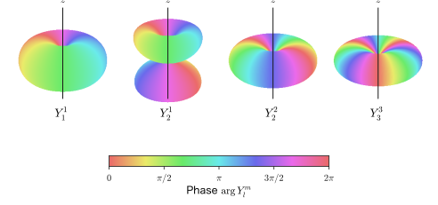
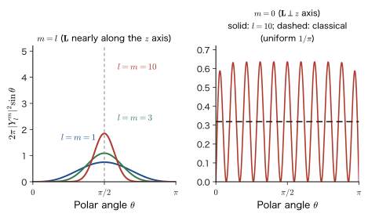
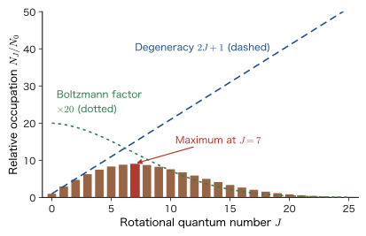
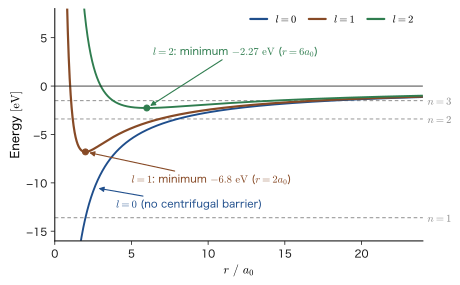

Chapter 22Spherical Harmonics and the Quantization of Angular Momentum
In the previous chapter, we replaced the classical angular momentum $\bm{L}=\bm{r}\times\bm{p}$ with the operator $\hat{\bm{L}}$ and learned that its three components do not commute with one another (for example, $[\hat{L}_x,\hat{L}_y]=i\hbar\hat{L}_z$). Since the components cannot be determined simultaneously, we can no longer “specify the angular momentum as a single arrow” in quantum mechanics. What, then, can we say for certain about angular momentum? The answer of this chapter is its magnitude and the component along one direction.
The tool that gives this answer is the operator for the square of the magnitude of the angular momentum, $\hat{\bm{L}}^2=\hat{L}_x^2+\hat{L}_y^2+\hat{L}_z^2$. When we write it in spherical coordinates $(r,\theta,\varphi)$, most of the terms appearing in $\hat{L}_x^2$ and $\hat{L}_y^2$ cancel, and it takes the surprisingly simple form $-\hbar^2\bigl\{\frac{1}{\sin\theta}\partial_\theta(\sin\theta\,\partial_\theta)+\frac{1}{\sin^2\theta}\partial_\varphi^2\bigr\}$. This is exactly the equation that already appeared in “a particle on a sphere” in the previous chapter and in the angular part of the hydrogen atom in Part III; its eigenfunctions are the spherical harmonics $Y_l^m(\theta,\varphi)$, and its eigenvalues are $l(l+1)\hbar^2$. The magnitude of the angular momentum is therefore $\sqrt{l(l+1)}\,\hbar$. This is not the $l\hbar$ of the Bohr model; it is a curious value that seems to be an integer multiple of $\hbar$ and yet is not. We then show that $\hat{\bm{L}}^2$ commutes with all three components, and arrive at the conclusion that “the magnitude and one component can be determined simultaneously, but the remaining two components cannot (in states with $l\ge1$).”
In classical mechanics (AD 03, “Introductory University Physics,” Chapter 8, Section 8.1), angular momentum is conserved under a central force, and both its magnitude and its direction can take continuous values. In quantum mechanics, both the magnitude and the $z$ component are discrete, and moreover the three components cannot be determined simultaneously. This quantization is invisible for macroscopic objects such as a rotating wheel or a planet, because $\hbar$ is far too small (Example 22.4), but it shows up clearly in the rotation of molecules (a CO molecule absorbs microwaves of about 115 GHz, Section 22.6) and in the distinction among the atomic orbitals s, p, d, and f (Section 22.7). In materials science, the shapes and angular momenta of d and f orbitals determine the color and magnetism of transition-metal oxides, the light emission of rare earths, and the quenching of the orbital angular momentum in a crystal field (Section 22.3). This chapter is the foundation for all of these.
- Computing the expansions of $\hat{L}_x^2$ and $\hat{L}_y^2$ without skipping steps, seeing that the first-derivative terms cancel, and deriving $\hat{\bm{L}}^2=-\hbar^2\bigl\{\frac{1}{\sin\theta}\partial_\theta(\sin\theta\,\partial_\theta)+\frac{1}{\sin^2\theta}\partial_\varphi^2\bigr\}$. The relation to $\nabla^2$, $\nabla^2=\partial_r^2+\frac2r\partial_r-\frac{\hat{\bm{L}}^2}{\hbar^2r^2}$, and the centrifugal potential
- The definition of the spherical harmonics $Y_l^m$ (with the Condon–Shortley phase), a table for $l=0,\dots,3$, and their properties (orthonormality, parity, nodes). $\hat{\bm{L}}^2Y_l^m=l(l+1)\hbar^2Y_l^m$, $\hat{L}_zY_l^m=m\hbar Y_l^m$, and the magnitude of the angular momentum $L=\sqrt{l(l+1)}\,\hbar$
- The transformation between the complex $Y_l^m$ and the real orbitals ($p_x$, $d_{xy}$, …), the measured values and probabilities of $\hat{L}_z$, and $\expval{\hat{\bm{L}}}=0$ for a real wave function (quenching of the orbital angular momentum)
- Using the commutator identity $[\hat{A}\hat{B},\hat{C}]=\hat{A}[\hat{B},\hat{C}]+[\hat{A},\hat{C}]\hat{B}$ to show that $[\hat{\bm{L}}^2,\hat{L}_z]=[\hat{\bm{L}}^2,\hat{L}_x]=[\hat{\bm{L}}^2,\hat{L}_y]=0$, and explaining that only the magnitude and one component can be determined simultaneously. For a central force, $[\hat{H},\hat{\bm{L}}]=0$, so the angular momentum is conserved
- Drawing the vector model ($\cos\theta_m=m/\sqrt{l(l+1)}$), explaining from $\expval{\hat{L}_x^2+\hat{L}_y^2}=[l(l+1)-m^2]\hbar^2$ “why the maximum value $l\hbar$ of $L_z$ is smaller than $L$,” and stating why the vector model is only a metaphor and describing the classical limit
- The rigid rotor $E_J=\hbar^2J(J+1)/(2I)$ and rotational spectra (selection rule $\Delta J=\pm1$, line spacing $2B$). For the CO molecule, $B=1.931\ \mathrm{cm^{-1}}$, $115.8\ \mathrm{GHz}$, and $J=7$ is the most heavily occupied level at 300 K
- That the angular part of the Schrödinger equation for a central force is the same, $Y_l^m$, for every potential; that the degeneracy $2l+1$ does not depend on the form of the potential; the effective potential $V_{\mathrm{eff}}=V+\hbar^2l(l+1)/(2mr^2)$; and the spectroscopic symbols s, p, d, f
Source notes: Yasuhide Mochizuki, “Physics Notes: Quantum Mechanics 2,” pp. 30–31.
22.1 The Polar-Coordinate Form of $\hat{\bm{L}}^2$ — Expansion, Cancellation, and Identities
22.1.1 Why consider $\hat{\bm{L}}^2$?
In classical mechanics, the square of the magnitude of the angular momentum vector $\bm{L}=\bm{r}\times\bm{p}$ is the sum of the squares of its components, $L^2=L_x^2+L_y^2+L_z^2$. In quantum mechanics the three components cannot be determined simultaneously (previous chapter), so let us “give up on the direction and ask only about the magnitude,” and construct the operator for the sum of the squares.
Definition 22.1: The operator for the square of the magnitude of angular momentum
\begin{equation} \hat{\bm{L}}^2\equiv\hat{L}_x^2+\hat{L}_y^2+\hat{L}_z^2 \label{eq:22-L2def} \end{equation}Here $\hat{L}_x^2=\hat{L}_x\hat{L}_x$ means that the operator $\hat{L}_x$ acts twice in succession. $\hat{\bm{L}}^2$ is the inner product $\hat{\bm{L}}\cdot\hat{\bm{L}}$ of the vector operator $\hat{\bm{L}}$ with itself.
Since $\hat{L}_x,\hat{L}_y,\hat{L}_z$ are all Hermitian operators, the eigenvalues of $\hat{L}_x^2$ and the like are greater than or equal to 0, and the eigenvalues of $\hat{\bm{L}}^2$ are also greater than or equal to 0 (this is one reason why it can be called the “square of the magnitude”). In the sections that follow, we show that $\hat{\bm{L}}^2$ commutes with all three components (Section 22.4). Therefore the “value of $\hat{\bm{L}}^2$” and the “value of $\hat{L}_z$” can be determined simultaneously.
Here we first write $\hat{\bm{L}}^2$ in polar coordinates. There are three reasons. (1) The wave function of an atom or molecule is naturally treated as a function of the angles $(\theta,\varphi)$. (2) As we saw in the previous chapter, the spherical-coordinate forms of $\hat{L}_x,\hat{L}_y,\hat{L}_z$ do not contain the radial coordinate $r$; only differentiation with respect to the angles $(\theta,\varphi)$ appears. In other words, angular momentum is an operator that describes rotation on a sphere (Figure 22.1). (3) When the squares of the three components are added, most of the complicated terms cancel one another, leaving a surprisingly simple and symmetric form. The result we obtained in the previous chapter from $\hat{\bm{p}}=-i\hbar\nabla$ ($\hbar/i=-i\hbar$) is
\begin{equation} \begin{aligned} \hat{L}_x&=i\hbar\left(\sin\varphi\,\frac{\partial}{\partial\theta}+\frac{\cos\varphi}{\tan\theta}\frac{\partial}{\partial\varphi}\right),\\ \hat{L}_y&=i\hbar\left(-\cos\varphi\,\frac{\partial}{\partial\theta}+\frac{\sin\varphi}{\tan\theta}\frac{\partial}{\partial\varphi}\right),\\ \hat{L}_z&=-i\hbar\,\frac{\partial}{\partial\varphi} \end{aligned} \label{eq:22-Lpolar} \end{equation}(In the previous chapter we wrote $-\hbar/i=i\hbar$.) Below, we abbreviate $\partial_\theta=\partial/\partial\theta$ and $\partial_\varphi=\partial/\partial\varphi$, and write $\dfrac{1}{\tan\theta}=\cot\theta$.
Caution: Squaring a differential operator “also differentiates the coefficients”
$\hat{L}_x^2$ is what results from letting $\hat{L}_x$ act twice in succession on a function $f(\theta,\varphi)$, namely $\hat{L}_x(\hat{L}_xf)$. The result of the first application carries coefficients such as $\sin\varphi$ and $\cot\theta$, so in the second differentiation, these coefficients are also differentiated, not only $f$ (product rule). For example, $\partial_\theta(\cot\theta\,g)=-\dfrac{1}{\sin^2\theta}g+\cot\theta\,\partial_\theta g$ ($\dfrac{\dd}{\dd\theta}\cot\theta=-\dfrac{1}{\sin^2\theta}$). Rather than “expanding $(\sin\varphi\,\partial_\theta+\cdots)^2$ as if it were an ordinary square,” we expand it while keeping the order of the operators and letting them act on the function.
22.1.2 Expansion of $\hat{L}_x^2$
From $\hat{L}_x=i\hbar D_x$ ($D_x\equiv\sin\varphi\,\partial_\theta+\cot\theta\cos\varphi\,\partial_\varphi$) in Eq. \eqref{eq:22-Lpolar}, we have $\hat{L}_x^2=(i\hbar)^2D_x^2=-\hbar^2D_x^2$, that is,
$$ -\frac{\hat{L}_x^2}{\hbar^2}=D_x^2=\left(\sin\varphi\,\partial_\theta+\cot\theta\cos\varphi\,\partial_\varphi\right)^2 $$We let this act on an arbitrary function $f(\theta,\varphi)$ and compute the result by splitting it into four products.
Derivation: Expansion of $D_x^2f$
We find the four parts of $D_x^2f=D_x\bigl(\sin\varphi\,\partial_\theta f+\cot\theta\cos\varphi\,\partial_\varphi f\bigr)$ in turn.
(a) $\sin\varphi\,\partial_\theta\bigl(\sin\varphi\,\partial_\theta f\bigr)=\sin^2\varphi\,\partial_\theta^2f$ ($\sin\varphi$ is treated as a constant independent of $\theta$).
(b) Noting that $\partial_\theta$ also acts on $\cot\theta$ ($\partial_\theta\cot\theta=-\dfrac{1}{\sin^2\theta}$),
$$ \begin{aligned} \sin\varphi\,\partial_\theta\bigl(\cot\theta\cos\varphi\,\partial_\varphi f\bigr)&=\sin\varphi\cos\varphi\bigl\{(\partial_\theta\cot\theta)\,\partial_\varphi f+\cot\theta\,\partial_\theta\partial_\varphi f\bigr\}\\ &=-\frac{\sin\varphi\cos\varphi}{\sin^2\theta}\,\partial_\varphi f+\sin\varphi\cos\varphi\cot\theta\,\partial_\theta\partial_\varphi f. \end{aligned} $$(c) Since $\partial_\varphi\sin\varphi=\cos\varphi$,
$$ \begin{aligned} \cot\theta\cos\varphi\,\partial_\varphi\bigl(\sin\varphi\,\partial_\theta f\bigr)&=\cot\theta\cos\varphi\bigl\{\cos\varphi\,\partial_\theta f+\sin\varphi\,\partial_\varphi\partial_\theta f\bigr\}\\ &=\cos^2\varphi\cot\theta\,\partial_\theta f+\sin\varphi\cos\varphi\cot\theta\,\partial_\varphi\partial_\theta f. \end{aligned} $$(d) Since $\partial_\varphi\cos\varphi=-\sin\varphi$,
$$ \begin{aligned} \cot\theta\cos\varphi\,\partial_\varphi\bigl(\cot\theta\cos\varphi\,\partial_\varphi f\bigr)&=\cot^2\theta\cos\varphi\bigl\{-\sin\varphi\,\partial_\varphi f+\cos\varphi\,\partial_\varphi^2f\bigr\}\\ &=-\sin\varphi\cos\varphi\cot^2\theta\,\partial_\varphi f+\cos^2\varphi\cot^2\theta\,\partial_\varphi^2f. \end{aligned} $$Adding (a) through (d) and using $\partial_\theta\partial_\varphi f=\partial_\varphi\partial_\theta f$ (the order of differentiation can be interchanged because $f$ is smooth), we can arrange the terms as follows:
\begin{equation} \begin{aligned} -\frac{\hat{L}_x^2}{\hbar^2}={}&\Bigl(\sin^2\varphi\,\partial_\theta^2-\frac{\sin\varphi\cos\varphi}{\sin^2\theta}\,\partial_\varphi+\sin\varphi\cos\varphi\cot\theta\,\partial_\theta\partial_\varphi\Bigr)\\ &+\bigl(\cos^2\varphi\cot\theta\,\partial_\theta+\sin\varphi\cos\varphi\cot\theta\,\partial_\theta\partial_\varphi\\ &\qquad-\sin\varphi\cos\varphi\cot^2\theta\,\partial_\varphi+\cos^2\varphi\cot^2\theta\,\partial_\varphi^2\bigr) \end{aligned} \label{eq:22-Lx2} \end{equation}The first line is (a)+(b) (three terms) and the second line is (c)+(d) (four terms). There are seven terms in total.
∎
22.1.3 Expansion of $\hat{L}_y^2$
From $\hat{L}_y=i\hbar D_y$ ($D_y\equiv-\cos\varphi\,\partial_\theta+\cot\theta\sin\varphi\,\partial_\varphi$), we similarly have $-\hat{L}_y^2/\hbar^2=D_y^2$. Since $\sin\varphi$ in $\hat{L}_x$ has merely been replaced by $-\cos\varphi$, and $\cos\varphi$ by $\sin\varphi$, the calculation proceeds in parallel with (a) through (d).
Derivation: Expansion of $D_y^2f$
(a′) $-\cos\varphi\,\partial_\theta\bigl(-\cos\varphi\,\partial_\theta f\bigr)=\cos^2\varphi\,\partial_\theta^2f$.
(b′)
$$ \begin{aligned} -\cos\varphi\,\partial_\theta\bigl(\cot\theta\sin\varphi\,\partial_\varphi f\bigr)&=-\sin\varphi\cos\varphi\bigl\{(\partial_\theta\cot\theta)\,\partial_\varphi f+\cot\theta\,\partial_\theta\partial_\varphi f\bigr\}\\ &=\frac{\sin\varphi\cos\varphi}{\sin^2\theta}\,\partial_\varphi f-\sin\varphi\cos\varphi\cot\theta\,\partial_\theta\partial_\varphi f. \end{aligned} $$(c′) Since $\partial_\varphi(-\cos\varphi)=\sin\varphi$,
$$ \begin{aligned} \cot\theta\sin\varphi\,\partial_\varphi\bigl(-\cos\varphi\,\partial_\theta f\bigr)&=\cot\theta\sin\varphi\bigl\{\sin\varphi\,\partial_\theta f-\cos\varphi\,\partial_\varphi\partial_\theta f\bigr\}\\ &=\sin^2\varphi\cot\theta\,\partial_\theta f-\sin\varphi\cos\varphi\cot\theta\,\partial_\theta\partial_\varphi f. \end{aligned} $$(d′)
$$ \begin{aligned} \cot\theta\sin\varphi\,\partial_\varphi\bigl(\cot\theta\sin\varphi\,\partial_\varphi f\bigr)&=\cot^2\theta\sin\varphi\bigl\{\cos\varphi\,\partial_\varphi f+\sin\varphi\,\partial_\varphi^2f\bigr\}\\ &=\sin\varphi\cos\varphi\cot^2\theta\,\partial_\varphi f+\sin^2\varphi\cot^2\theta\,\partial_\varphi^2f. \end{aligned} $$Adding these together,
\begin{equation} \begin{aligned} -\frac{\hat{L}_y^2}{\hbar^2}={}&\Bigl(\cos^2\varphi\,\partial_\theta^2+\frac{\sin\varphi\cos\varphi}{\sin^2\theta}\,\partial_\varphi-\sin\varphi\cos\varphi\cot\theta\,\partial_\theta\partial_\varphi\Bigr)\\ &+\bigl(\sin^2\varphi\cot\theta\,\partial_\theta-\sin\varphi\cos\varphi\cot\theta\,\partial_\theta\partial_\varphi\\ &\qquad+\sin\varphi\cos\varphi\cot^2\theta\,\partial_\varphi+\sin^2\varphi\cot^2\theta\,\partial_\varphi^2\bigr) \end{aligned} \label{eq:22-Ly2} \end{equation}∎
Caution: Do not confuse the trigonometric functions of $\varphi$ with those of $\theta$
The last terms of Eqs. \eqref{eq:22-Lx2} and \eqref{eq:22-Ly2} are $\cos^2\varphi\cot^2\theta\,\partial_\varphi^2$ and $\sin^2\varphi\cot^2\theta\,\partial_\varphi^2$, respectively. They arise by squaring the coefficient of $\partial_\varphi$, which is “the product of $\cot\theta$ and a trigonometric function of $\varphi$” ($\cot\theta\cos\varphi$, $\cot\theta\sin\varphi$). If we confuse the trigonometric functions of $\varphi$ with those of $\theta$, then when we add the two expressions in the next subsection, coefficients that depend on $\varphi$ will remain. Since $\hat{L}_x^2+\hat{L}_y^2$ must be invariant under rotation about the $z$ axis ($\varphi\to\varphi+\alpha$), no function of $\varphi$ can remain. This makes a good check of the calculation.
22.1.4 $\hat{L}_x^2+\hat{L}_y^2$ — cancellation of the first-derivative terms
We add Eqs. \eqref{eq:22-Lx2} and \eqref{eq:22-Ly2}. If we sort the 14 terms by type of derivative and collect them in Table 22.1, the terms that cancel can be seen at a glance. Each row of the table gives the terms appearing in $-\hat{L}_x^2/\hbar^2$, the terms appearing in $-\hat{L}_y^2/\hbar^2$, and their sum (we abbreviate $s\equiv\sin\varphi\cos\varphi$).
| Type of derivative | Terms of $-\hat{L}_x^2/\hbar^2$ | Terms of $-\hat{L}_y^2/\hbar^2$ | Sum |
|---|---|---|---|
| $\partial_\theta^2$ | $\sin^2\varphi$ | $\cos^2\varphi$ | $1$ |
| $\partial_\theta$ | $\cos^2\varphi\cot\theta$ | $\sin^2\varphi\cot\theta$ | $\cot\theta$ |
| $\partial_\varphi^2$ | $\cos^2\varphi\cot^2\theta$ | $\sin^2\varphi\cot^2\theta$ | $\cot^2\theta$ |
| $\partial_\varphi$ (first-order) | $-\dfrac{s}{\sin^2\theta}-s\cot^2\theta$ | $+\dfrac{s}{\sin^2\theta}+s\cot^2\theta$ | $0$ (cancels) |
| $\partial_\theta\partial_\varphi$ | $+s\cot\theta+s\cot\theta$ | $-s\cot\theta-s\cot\theta$ | $0$ (cancels) |
In the terms in $\partial_\theta^2$, $\partial_\theta$, and $\partial_\varphi^2$, $\varphi$ disappears from the coefficients when we use $\sin^2\varphi+\cos^2\varphi=1$. The four first-order terms in $\partial_\varphi$ and the four terms in $\partial_\theta\partial_\varphi$ have exactly opposite signs in $\hat{L}_x^2$ and $\hat{L}_y^2$, so they all cancel. Thus we obtain
\begin{equation} -\frac{\hat{L}_x^2+\hat{L}_y^2}{\hbar^2}=\frac{1}{\tan\theta}\,\frac{\partial}{\partial\theta}+\frac{\partial^2}{\partial\theta^2}+\frac{1}{\tan^2\theta}\,\frac{\partial^2}{\partial\varphi^2} \label{eq:22-LxLy} \end{equation}The most important point here is that no $\varphi$ remains in any of the coefficients on the right-hand side.
Discussion: Why do the terms that depend on $\varphi$ cancel?
The quantity $\hat{L}_x^2+\hat{L}_y^2=\hat{\bm{L}}^2-\hat{L}_z^2$ should not change its form when the coordinate system is rotated about the $z$ axis (however we choose the orientations of the $x$ and $y$ axes, the sum of squares of the transverse components, $L_x^2+L_y^2$, is the same). Since a rotation about the $z$ axis is the transformation $\varphi\to\varphi+\alpha$, the coefficients of this operator must not depend on $\varphi$. That no term containing $\sin\varphi\cos\varphi$ remains is a manifestation of this symmetry. For the same reason, functions of $\varphi$ appear in $\hat{L}_x^2$ alone and in $\hat{L}_y^2$ alone, but they vanish when $x$ and $y$ are added with equal weight. We will check this claim algebraically in Section 22.4 as $[\hat{\bm{L}}^2,\hat{L}_z]=0$ (commuting with $\hat{L}_z=-i\hbar\,\partial_\varphi$ is the same as the coefficients of $\hat{\bm{L}}^2$ being independent of $\varphi$).
22.1.5 $\hat{L}_z^2$
From $\hat{L}_z=-i\hbar\,\partial_\varphi$ we obtain $\hat{L}_z^2=(-i\hbar)^2\partial_\varphi^2=-\hbar^2\partial_\varphi^2$, that is,
\begin{equation} -\frac{\hat{L}_z^2}{\hbar^2}=\frac{\partial^2}{\partial\varphi^2} \label{eq:22-Lz2} \end{equation}holds.
22.1.6 Two identities and the final form of $\hat{\bm{L}}^2$
Rewriting $\hat{\bm{L}}^2=\hat{L}_x^2+\hat{L}_y^2+\hat{L}_z^2$ as $\hat{\bm{L}}^2=-\hbar^2\Bigl\{-\dfrac{\hat{L}_x^2+\hat{L}_y^2}{\hbar^2}-\dfrac{\hat{L}_z^2}{\hbar^2}\Bigr\}$ and substituting Eqs. \eqref{eq:22-LxLy} and \eqref{eq:22-Lz2}, we obtain
$$ \hat{\bm{L}}^2=-\hbar^2\left\{\frac{1}{\tan\theta}\frac{\partial}{\partial\theta}+\frac{\partial^2}{\partial\theta^2}+\left(1+\frac{1}{\tan^2\theta}\right)\frac{\partial^2}{\partial\varphi^2}\right\} $$To put this into a form that is easier to read, we use the following two identities.
Two identities
(i)
$$ \frac{1}{\tan\theta}\frac{\partial}{\partial\theta}+\frac{\partial^2}{\partial\theta^2}=\frac{\cos\theta}{\sin\theta}\frac{\partial}{\partial\theta}+\frac{\partial^2}{\partial\theta^2}=\frac{1}{\sin\theta}\frac{\partial}{\partial\theta}\left(\sin\theta\,\frac{\partial}{\partial\theta}\right) $$Indeed, applying the right-hand side to a function $f$ and using the product rule $\partial_\theta(\sin\theta\,\partial_\theta f)=\cos\theta\,\partial_\theta f+\sin\theta\,\partial_\theta^2f$, we get
$$ \frac{1}{\sin\theta}\bigl(\cos\theta\,\partial_\theta f+\sin\theta\,\partial_\theta^2f\bigr)=\frac{\cos\theta}{\sin\theta}\partial_\theta f+\partial_\theta^2f $$which agrees with the left-hand side.
(ii) $1+\dfrac{1}{\tan^2\theta}=\dfrac{\sin^2\theta+\cos^2\theta}{\sin^2\theta}=\dfrac{1}{\sin^2\theta}$ (we used $\sin^2\theta+\cos^2\theta=1$).
∎
Using (i) for the first and second terms and (ii) for the third term, we obtain the following result.
Theorem 22.1: The polar-coordinate form of $\hat{\bm{L}}^2$
\begin{equation} \hat{\bm{L}}^2=-\hbar^2\left\{\frac{1}{\sin\theta}\frac{\partial}{\partial\theta}\left(\sin\theta\,\frac{\partial}{\partial\theta}\right)+\frac{1}{\sin^2\theta}\frac{\partial^2}{\partial\varphi^2}\right\} \label{eq:22-L2polar} \end{equation}$\Delta_{\mathrm{S}}$ is called the spherical Laplacian (the Laplace operator on the unit sphere). Since $r$ does not appear in Eq. \eqref{eq:22-L2polar}, $\hat{\bm{L}}^2$ is an operator that, regardless of the radius of the sphere, acts only on functions defined on the sphere. Let us check the dimension: $\hbar$ has the dimension of angular momentum ($\mathrm{J\,s}$), and differentiation with respect to an angle is dimensionless, so $\hat{\bm{L}}^2$ has the dimension $(\mathrm{J\,s})^2$, that is, the square of an angular momentum. Also, when the operator acts on the constant function $f=1$ (the angular part of an $s$ state), the result is $\hat{\bm{L}}^2\cdot1=0$; that is, this function represents a state with angular momentum 0.
Example 22.1: Applying $\hat{\bm{L}}^2$ to specific functions
Using Eq. \eqref{eq:22-L2polar}, show that $f_1=\cos\theta$, $f_2=\sin\theta\,e^{i\varphi}$, and $f_3=3\cos^2\theta-1$ are eigenfunctions of $\hat{\bm{L}}^2$, and find the eigenvalues.
Solution. $f_1=\cos\theta$: We have $\partial_\theta f_1=-\sin\theta$, $\sin\theta\,\partial_\theta f_1=-\sin^2\theta$, and $\partial_\theta\bigl(-\sin^2\theta\bigr)=-2\sin\theta\cos\theta$. Dividing this by $\sin\theta$ gives $-2\cos\theta$. Also $\partial_\varphi^2f_1=0$. Hence $\hat{\bm{L}}^2f_1=-\hbar^2(-2\cos\theta)=2\hbar^2f_1$. The eigenvalue is $2\hbar^2$.
$f_2=\sin\theta\,e^{i\varphi}$: We have $\partial_\theta f_2=\cos\theta\,e^{i\varphi}$ and $\sin\theta\,\partial_\theta f_2=\sin\theta\cos\theta\,e^{i\varphi}$; since $\partial_\theta(\sin\theta\cos\theta)=\cos^2\theta-\sin^2\theta$, the first term is $\dfrac{\cos^2\theta-\sin^2\theta}{\sin\theta}e^{i\varphi}$. For the second term, since $\partial_\varphi^2f_2=-\sin\theta\,e^{i\varphi}$, it is $\dfrac{1}{\sin^2\theta}\cdot(-\sin\theta\,e^{i\varphi})=-\dfrac{e^{i\varphi}}{\sin\theta}$. The expression inside the braces is
$$ \frac{\cos^2\theta-\sin^2\theta-1}{\sin\theta}\,e^{i\varphi}=\frac{-2\sin^2\theta}{\sin\theta}\,e^{i\varphi}=-2\sin\theta\,e^{i\varphi}\qquad(\cos^2\theta-1=-\sin^2\theta) $$Hence $\hat{\bm{L}}^2f_2=2\hbar^2f_2$. The eigenvalue is $2\hbar^2$.
$f_3=3\cos^2\theta-1$: We have $\partial_\theta f_3=-6\cos\theta\sin\theta$ and $\sin\theta\,\partial_\theta f_3=-6\cos\theta\sin^2\theta$. Differentiating once more with respect to $\theta$,
$$ \partial_\theta\bigl(-6\cos\theta\sin^2\theta\bigr)=-6\bigl(-\sin^3\theta+2\sin\theta\cos^2\theta\bigr)=6\sin^3\theta-12\sin\theta\cos^2\theta $$Dividing by $\sin\theta$ gives $6\sin^2\theta-12\cos^2\theta=6(1-\cos^2\theta)-12\cos^2\theta=6-18\cos^2\theta=-6\,(3\cos^2\theta-1)$. Also $\partial_\varphi^2f_3=0$. Hence $\hat{\bm{L}}^2f_3=-\hbar^2\cdot(-6f_3)=6\hbar^2f_3$. The eigenvalue is $6\hbar^2$.
The three eigenvalues $2\hbar^2,\ 2\hbar^2,\ 6\hbar^2$ are $l(l+1)\hbar^2$ with $l=1,1,2$. They correspond to $f_1\propto Y_1^0$, $f_2\propto Y_1^1$, and $f_3\propto Y_2^0$ (Section 22.2).
22.1.7 Relation to $\nabla^2$ — the centrifugal potential
The Laplacian in spherical coordinates (AD 02, Chapter 44, Section 44.4; we also used it in Chapter 14, Section 14.2) is given by
$$ \begin{aligned} \nabla^2=\frac{1}{r^2}\frac{\partial}{\partial r}\left(r^2\frac{\partial}{\partial r}\right)&+\frac{1}{r^2}\left\{\frac{1}{\sin\theta}\frac{\partial}{\partial\theta}\left(\sin\theta\,\frac{\partial}{\partial\theta}\right)\right.\\ &\qquad\left.+\frac{1}{\sin^2\theta}\frac{\partial^2}{\partial\varphi^2}\right\} \end{aligned} $$The last braces are exactly the spherical Laplacian $\Delta_{\mathrm{S}}$, so using $\Delta_{\mathrm{S}}=-\hat{\bm{L}}^2/\hbar^2$ from Theorem 22.1, we obtain the following relation.
Theorem 22.2: Radial and angular parts of $\nabla^2$
\begin{equation} \nabla^2=\frac{\partial^2}{\partial r^2}+\frac{2}{r}\frac{\partial}{\partial r}-\frac{\hat{\bm{L}}^2}{\hbar^2r^2} \label{eq:22-lap} \end{equation}Here we used $\dfrac{1}{r^2}\partial_r\bigl(r^2\partial_r\bigr)=\partial_r^2+\dfrac{2}{r}\partial_r$.
We denote the mass of the particle by $m$ (not to be confused with the magnetic quantum number $m$). Since the kinetic energy operator is $\hat{T}=-\dfrac{\hbar^2}{2m}\nabla^2$, it can be written as
\begin{equation} \hat{T}=-\frac{\hbar^2}{2m}\left(\frac{\partial^2}{\partial r^2}+\frac{2}{r}\frac{\partial}{\partial r}\right)+\frac{\hat{\bm{L}}^2}{2mr^2} \label{eq:22-T} \end{equation}The first term is the kinetic energy of the radial motion, and the second term corresponds to the rotational kinetic energy $\dfrac{L^2}{2mr^2}$ (the $\dfrac{L^2}{2I}$ of a rotating body with moment of inertia $I=mr^2$; AD 03, Chapter 10, Section 10.8). In classical mechanics as well, the energy of a particle under a central force can be split into the kinetic energy of the radial motion and $\dfrac{L^2}{2mr^2}$; we called the latter the centrifugal potential and added it to the potential energy to form the effective potential (AD 03, Chapter 8, Section 8.4). In quantum mechanics, too, the same structure is obtained simply by substituting an eigenvalue of $\hat{\bm{L}}^2$ (Section 22.7).
Example 22.2: Checking $\nabla^2(r^lY_l^m)=0$ with the decomposition of $\nabla^2$
(1) Use Eq. \eqref{eq:22-lap} to verify that $\nabla^2z=0$ for $z=r\cos\theta$. (2) Accepting $\hat{\bm{L}}^2Y_l^m=l(l+1)\hbar^2Y_l^m$ (Section 22.2), show that $\nabla^2\bigl(r^lY_l^m\bigr)=0$.
Solution. (1) Apply Eq. \eqref{eq:22-lap} to $z=r\cos\theta$. Radial part: $\left(\partial_r^2+\dfrac2r\partial_r\right)(r\cos\theta)=\left(0+\dfrac2r\right)\cos\theta=\dfrac{2\cos\theta}{r}$. Angular part: by Example 22.1, $\hat{\bm{L}}^2\cos\theta=2\hbar^2\cos\theta$, so $-\dfrac{\hat{\bm{L}}^2}{\hbar^2r^2}(r\cos\theta)=-\dfrac{2\hbar^2}{\hbar^2r^2}\,r\cos\theta=-\dfrac{2\cos\theta}{r}$. The sum is $\dfrac{2\cos\theta}{r}-\dfrac{2\cos\theta}{r}=0$, which agrees with the result that is immediate in Cartesian coordinates, $\nabla^2z=\partial_z^2z=0$.
(2) Let $g=r^lY_l^m$. Radial part: $\partial_r^2r^l=l(l-1)r^{l-2}$ and $\dfrac2r\partial_rr^l=2l\,r^{l-2}$, and the sum is $\bigl\{l(l-1)+2l\bigr\}r^{l-2}=l(l+1)r^{l-2}$. Hence the radial part is $l(l+1)r^{l-2}Y_l^m$. Angular part: $-\dfrac{\hat{\bm{L}}^2}{\hbar^2r^2}\bigl(r^lY_l^m\bigr)=-\dfrac{l(l+1)\hbar^2}{\hbar^2r^2}r^lY_l^m=-l(l+1)r^{l-2}Y_l^m$. Adding the two gives $\nabla^2g=0$.
That is, $r^lY_l^m$ is a solution of Laplace's equation $\nabla^2g=0$ (a homogeneous polynomial of degree $l$ in $x,y,z$). This is the pairing of $r^l$ and $Y_l^m$ that appears in the crystal field (Chapter 44) and in the multipole expansion of an electrostatic potential.
22.2 Spherical Harmonics and the Eigenvalues of $\hat{\bm{L}}^2$ — $\hat{\bm{L}}^2Y=l(l+1)\hbar^2Y$
22.2.1 A particle on a sphere is an eigenvalue problem of $\hat{\bm{L}}^2$
Let us recall the “particle on a sphere” that we solved in the previous chapter. A particle of mass $m_{\mathrm{e}}$ bound to a sphere of radius $a$ is fixed at $r=a$, so in the kinetic energy \eqref{eq:22-T} the radial derivative terms play no role, and only $\hat{T}=\hat{\bm{L}}^2/(2m_{\mathrm{e}}a^2)$ remains (the potential is constant on the sphere, so we set it to 0). Writing the wave function as $Y(\theta,\varphi)$, the Schrödinger equation $\hat{T}Y=EY$ becomes, by Theorem 22.1,
\begin{equation} \begin{aligned} &-\frac{\hbar^2}{2m_{\mathrm{e}}a^2}\left\{\frac{1}{\sin\theta}\frac{\partial}{\partial\theta}\left(\sin\theta\,\frac{\partial}{\partial\theta}\right)+\frac{1}{\sin^2\theta}\frac{\partial^2}{\partial\varphi^2}\right\}Y\\ &\qquad=\underbrace{\frac{\hbar^2}{2m_{\mathrm{e}}a^2}\,l(l+1)}_{E}\,Y \end{aligned} \label{eq:22-sphere} \end{equation}The coefficient on the right-hand side, $E=\dfrac{\hbar^2}{2m_{\mathrm{e}}a^2}\,l(l+1)$ ($l=0,1,2,\dots$), gives the energy levels of a particle on a sphere. This form $l(l+1)$ comes from the way we chose the separation constant when we separated variables in the previous chapter (writing $Y=\Theta(\theta)\Phi(\varphi)$, the equation for $\Theta$ becomes the associated Legendre equation, and the condition of having a solution that is finite at $\theta=0,\pi$ gives $l=0,1,2,\dots$ and $\abs{m}\le l$). Let us check the main points again, this time in the language of $\hat{\bm{L}}^2$.
Derivation: Separation of variables in Eq. \eqref{eq:22-sphere}
Multiply both sides by $-\dfrac{2m_{\mathrm{e}}a^2}{\hbar^2}$ and let $\dfrac{2m_{\mathrm{e}}a^2E}{\hbar^2}=l(l+1)$; then Eq. \eqref{eq:22-sphere} becomes $\Delta_{\mathrm{S}}Y=-l(l+1)Y$. Substituting $Y=\Theta(\theta)\Phi(\varphi)$, dividing by $\Theta\Phi$, and multiplying by $\sin^2\theta$, we obtain
$$ \frac{\sin\theta}{\Theta}\frac{\dd}{\dd\theta}\left(\sin\theta\,\frac{\dd\Theta}{\dd\theta}\right)+l(l+1)\sin^2\theta=-\frac{1}{\Phi}\frac{\dd^2\Phi}{\dd\varphi^2} $$The left-hand side is a function of $\theta$ only and the right-hand side is a function of $\varphi$ only, so both sides are equal to the same constant. Let that constant be $m^2$. From the right-hand side, $\Phi''=-m^2\Phi$, that is, $\Phi=e^{im\varphi}$. Since $\varphi$ and $\varphi+2\pi$ are the same point, $\Phi(\varphi+2\pi)=\Phi(\varphi)$, and hence $m=0,\pm1,\pm2,\dots$ (Chapter 14, Section 14.5.1). From the left-hand side we obtain the equation for $\Theta$,
\begin{equation} \frac{1}{\sin\theta}\frac{\dd}{\dd\theta}\left(\sin\theta\,\frac{\dd\Theta}{\dd\theta}\right)+\left\{l(l+1)-\frac{m^2}{\sin^2\theta}\right\}\Theta=0 \label{eq:22-thetaeq} \end{equation}Now let $x=\cos\theta$. By the chain rule $\dfrac{\dd}{\dd\theta}=-\sin\theta\,\dfrac{\dd}{\dd x}$, we have $\sin\theta\,\dfrac{\dd\Theta}{\dd\theta}=-(1-x^2)\dfrac{\dd\Theta}{\dd x}$; differentiating once more with respect to $\theta$ and dividing by $\sin\theta$ gives $\dfrac{\dd}{\dd x}\left\{(1-x^2)\dfrac{\dd\Theta}{\dd x}\right\}$. Therefore Eq. \eqref{eq:22-thetaeq} becomes
$$ (1-x^2)\frac{\dd^2\Theta}{\dd x^2}-2x\frac{\dd\Theta}{\dd x}+\left\{l(l+1)-\frac{m^2}{1-x^2}\right\}\Theta=0 $$that is, the associated Legendre equation (Chapter 14, Section 14.5.2, Chapter 15, Section 15.4). This equation has a solution that is finite at $x=\pm1$ (the two poles on the $z$ axis) only when $l$ is a non-negative integer and $\abs{m}\le l$, and the solution is proportional to the associated Legendre function $P_l^{\abs{m}}(\cos\theta)$ (AD 02, Chapter 40, Section 40.4, Chapter 48, Section 48.4).
The reason we wrote the separation constant in the form $l(l+1)$ is that the values allowed by this finiteness condition line up in the form $l(l+1)$ for $l=0,1,2,\dots$. Even if we start by writing $\Delta_{\mathrm{S}}Y=-\lambda Y$ with a general real number $\lambda$, a solution that is finite at both poles $\theta=0,\pi$ exists only for $\lambda=l(l+1)$ ($l$ a non-negative integer) (AD 02, Chapter 40, Section 40.4). In other words, we did not decide in advance that $l$ is an integer; it is the conditions required of a wave function that restrict $l$ to integers.
∎
Thus a function $Y(\theta,\varphi)$ satisfying Eq. \eqref{eq:22-sphere} is the same function that appeared as the angular part in the hydrogen atom of Part III (Chapter 15, Section 15.7)—the spherical harmonics. Here, too, exactly as for the hydrogen atom, the solution is a product of a solution $\Theta$ of the associated Legendre equation and $e^{im\varphi}$.
Next, let us multiply both sides of Eq. \eqref{eq:22-sphere} by $2m_{\mathrm{e}}a^2$.
$$ \underbrace{-\hbar^2\left\{\frac{1}{\sin\theta}\frac{\partial}{\partial\theta}\left(\sin\theta\,\frac{\partial}{\partial\theta}\right)+\frac{1}{\sin^2\theta}\frac{\partial^2}{\partial\varphi^2}\right\}Y}_{\hat{\bm{L}}^2Y}\;=\;l(l+1)\hbar^2\,Y $$By Theorem 22.1, the part of the left-hand side in braces is $\hat{\bm{L}}^2Y$. Therefore,
\begin{equation} \hat{\bm{L}}^2Y=l(l+1)\hbar^2\,Y \label{eq:22-eigen} \end{equation}holds. The spherical harmonics are eigenfunctions of $\hat{\bm{L}}^2$, with eigenvalue $l(l+1)\hbar^2$. The fact that the energy level $E=\dfrac{\hbar^2l(l+1)}{2m_{\mathrm{e}}a^2}$ is the eigenvalue of $\hat{\bm{L}}^2$ divided by twice the moment of inertia $I=m_{\mathrm{e}}a^2$, namely $\dfrac{L^2}{2I}$, corresponds to the fact that the rotational kinetic energy is $\dfrac{L^2}{2I}$ (we apply this to the rotation of molecules in Section 22.6).
22.2.2 Definition of the spherical harmonics $Y_l^m$ and a table of them
We defined the spherical harmonics in Chapter 14, Section 14.5 by normalizing $\Theta\,\Phi$. Here we once again collect the phase convention (the overall sign for each sign of $m$) in one place. The product $\Theta(\theta)\Phi(\varphi)$ obtained by separation of variables still satisfies the equation when multiplied by an overall constant, so its sign (phase) is not fixed. This book adopts the following Condon–Shortley phase.
Definition 22.2: Spherical harmonics $Y_l^m$ (Condon–Shortley convention)
For $l=0,1,2,\dots$ and $m=-l,-l+1,\dots,l$,
\begin{equation} Y_l^m(\theta,\varphi)=(-1)^{\frac{m+\abs{m}}{2}}\sqrt{\frac{2l+1}{4\pi}\frac{(l-\abs{m})!}{(l+\abs{m})!}}\;P_l^{\abs{m}}(\cos\theta)\,e^{im\varphi} \label{eq:22-Ylm} \end{equation}Here $P_l^m(x)=(1-x^2)^{m/2}\dfrac{\dd^m}{\dd x^m}P_l(x)$ ($m\ge0$) and $P_l(x)=\dfrac{1}{2^ll!}\dfrac{\dd^l}{\dd x^l}(x^2-1)^l$ are the associated Legendre function and the Legendre polynomial (the factor $(-1)^m$ is not included in $P_l^m$). The phase factor $(-1)^{(m+\abs{m})/2}$ equals $(-1)^m$ for $m\ge0$ and $1$ for $m\lt0$.
Eq. \eqref{eq:22-Ylm} is the same as Definition 14.4 of Chapter 14 ($(-1)^m\sqrt{\cdots}\,P_l^m\,e^{im\varphi}$ for $m\ge0$, and $Y_l^{-m}=(-1)^m(Y_l^m)^*$). Indeed, for $m\gt0$ we have $Y_l^{-m}=(-1)^m(Y_l^m)^*=(-1)^m(-1)^m\sqrt{\cdots}\,P_l^m\,e^{-im\varphi}=\sqrt{\cdots}\,P_l^m\,e^{-im\varphi}$, which agrees with the case $m\lt0$ of Eq. \eqref{eq:22-Ylm}. Compared with the function $\Theta\Phi$, which is just the normalized result of the separation of variables, the factor $(-1)^m$ multiplies only the states with $m\gt0$. This sign was chosen so that the coefficients that appear when the ladder operators $\hat{L}_\pm=\hat{L}_x\pm i\hat{L}_y$ act become positive real numbers (Chapter 24), and it does not affect the probability density $\abs{Y_l^m}^2$ or expectation values. Some textbooks include $(-1)^m$ in the definition of $P_l^m$, or omit it from $Y_l^m$, so check the convention when comparing with other books.
| $l$ (orbital) | $m$ | $Y_l^m(\theta,\varphi)$ |
|---|---|---|
| 0 (s) | 0 | $\dfrac{1}{\sqrt{4\pi}}$ |
| 1 (p) | 0 | $\sqrt{\dfrac{3}{4\pi}}\cos\theta$ |
| $\pm1$ | $\mp\sqrt{\dfrac{3}{8\pi}}\sin\theta\,e^{\pm i\varphi}$ | |
| 2 (d) | 0 | $\sqrt{\dfrac{5}{16\pi}}\bigl(3\cos^2\theta-1\bigr)$ |
| $\pm1$ | $\mp\sqrt{\dfrac{15}{8\pi}}\sin\theta\cos\theta\,e^{\pm i\varphi}$ | |
| $\pm2$ | $\sqrt{\dfrac{15}{32\pi}}\sin^2\theta\,e^{\pm2i\varphi}$ | |
| 3 (f) | 0 | $\sqrt{\dfrac{7}{16\pi}}\bigl(5\cos^3\theta-3\cos\theta\bigr)$ |
| $\pm1$ | $\mp\sqrt{\dfrac{21}{64\pi}}\sin\theta\bigl(5\cos^2\theta-1\bigr)e^{\pm i\varphi}$ | |
| $\pm2$ | $\sqrt{\dfrac{105}{32\pi}}\sin^2\theta\cos\theta\,e^{\pm2i\varphi}$ | |
| $\pm3$ | $\mp\sqrt{\dfrac{35}{64\pi}}\sin^3\theta\,e^{\pm3i\varphi}$ |
The functions with negative $m$ are obtained from $Y_l^{-m}=(-1)^m(Y_l^m)^*$. In the double signs in the table, the upper sign corresponds to functions with $m\gt0$ and the lower sign to functions with $m\lt0$ (for example, $Y_1^{1}=-\sqrt{3/8\pi}\,\sin\theta\,e^{i\varphi}$ and $Y_1^{-1}=+\sqrt{3/8\pi}\,\sin\theta\,e^{-i\varphi}$).
22.2.3 $Y_l^m$ are simultaneous eigenfunctions of $\hat{\bm{L}}^2$ and $\hat{L}_z$
Theorem 22.3: Eigenvalues of $Y_l^m$
The spherical harmonics $Y_l^m(\theta,\varphi)$ are simultaneous eigenfunctions of $\hat{\bm{L}}^2$ and $\hat{L}_z$, and
\begin{equation} \hat{\bm{L}}^2Y_l^m=l(l+1)\hbar^2\,Y_l^m\quad(l=0,1,2,\dots),\qquad \hat{L}_zY_l^m=m\hbar\,Y_l^m\quad(m=-l,\dots,l) \label{eq:22-Ylm-eig} \end{equation}hold.
Proof
$\hat{L}_z$: Since $Y_l^m\propto P_l^{\abs{m}}(\cos\theta)\,e^{im\varphi}$ depends on $\varphi$ only through $e^{im\varphi}$, $\hat{L}_zY_l^m=-i\hbar\,\partial_\varphi Y_l^m=-i\hbar\cdot(im)Y_l^m=m\hbar\,Y_l^m$.
$\hat{\bm{L}}^2$: Apply Theorem 22.1 to $Y_l^m=c\,\Theta(\theta)\,e^{im\varphi}$ ($c$ is a constant and $\Theta\propto P_l^{\abs{m}}(\cos\theta)$). Since $\partial_\varphi^2e^{im\varphi}=-m^2e^{im\varphi}$,
$$ \Delta_{\mathrm{S}}Y_l^m=c\,e^{im\varphi}\left\{\frac{1}{\sin\theta}\frac{\dd}{\dd\theta}\left(\sin\theta\,\frac{\dd\Theta}{\dd\theta}\right)-\frac{m^2}{\sin^2\theta}\Theta\right\}=c\,e^{im\varphi}\cdot\bigl(-l(l+1)\Theta\bigr)=-l(l+1)\,Y_l^m $$(in the second equality we used that $\Theta$ satisfies Eq. \eqref{eq:22-thetaeq}). Multiplying both sides by $-\hbar^2$ gives $\hat{\bm{L}}^2Y_l^m=l(l+1)\hbar^2Y_l^m$.
∎
Here, the fact that the eigenvalue of $\hat{\bm{L}}^2$ can be written as $l(l+1)\hbar^2$ with an integer $l$, and the fact that the $m$ in the eigenvalue $m\hbar$ of $\hat{L}_z$ takes integer values from $-l$ to $l$, are conclusions that came from the conditions that a wave function must satisfy, namely finiteness at $\theta=0,\pi$ and periodicity in $\varphi$. The eigenvalues are discrete for the same reason that the energy was discrete for the particle on a ring in the previous chapter (the condition that the wave function closes up smoothly on the sphere).
Moreover, the $Y_l^m$ ($l=0,1,2,\dots$, $m=-l,\dots,l$) form a complete set in terms of which any function on the sphere can be expanded (this follows from the completeness of the Legendre polynomials and of $e^{im\varphi}$; AD 02, Chapter 40, Section 40.5; for the properties, see Chapter 16, Section 16.7). Since any state on the sphere can be written as a superposition of the $Y_l^m$, the eigenvalues of $\hat{\bm{L}}^2$ are only $l(l+1)\hbar^2$ and nothing else, and the values obtained in a measurement are limited to these (Law 22.1 in the next subsection).
22.2.4 The azimuthal quantum number $l$ gives the magnitude of the angular momentum
Let us reread Eq. \eqref{eq:22-eigen} in terms of the magnitude of the angular momentum. In a state in which the eigenvalue of $\hat{\bm{L}}^2$ is $l(l+1)\hbar^2$, the measured value of the square of the magnitude of the angular momentum is fixed at $l(l+1)\hbar^2$ (the measurement axiom, Chapter 8, Section 8.3).
Law 22.1: Quantization of the magnitude and the $z$ component of the orbital angular momentum
The measured value of the square $L^2$ of the magnitude of the orbital angular momentum is limited to $l(l+1)\hbar^2$ ($l=0,1,2,\dots$). Therefore the magnitude of the angular momentum is
\begin{equation} L=\sqrt{l(l+1)}\,\hbar \label{eq:22-Lmag} \end{equation}The number $l$ is called the azimuthal quantum number. In addition, the $z$ component is limited to $L_z=m\hbar$ ($m=-l,-l+1,\dots,l$; $m$ is called the magnetic quantum number), and for a given $l$ there are $2l+1$ states.
Intuition: $l$ is the quantum number that tells “how much angular momentum the particle has”
The azimuthal quantum number $l$ is the quantum number that indicates how much angular momentum the particle (electron) has, that is, a measure of its magnitude. For $l=0$ the angular momentum is 0, for $l=1$ it is $\sqrt{2}\,\hbar$, for $l=2$ it is $\sqrt{6}\,\hbar$, for $l=3$ it is $\sqrt{12}\,\hbar$, and so on, growing larger. What differs decisively from classical mechanics and the Bohr model is that the magnitude of the angular momentum is not the sequence of integers $0,1,2,\dots$ in units of $\hbar$ but the sequence $\sqrt{0},\sqrt{2},\sqrt{6},\sqrt{12},\dots$.
The number $l$ also determines the energy $\dfrac{\hbar^2l(l+1)}{2I}$ arising from rotation (the magnitude of the centrifugal potential, Section 22.7). The larger $l$ is, the larger the rotational energy the electron has—a “potential of angular momentum,” so to speak.
Caution: $L=\sqrt{l(l+1)}\,\hbar$, not $l\hbar$
In the Bohr model (Chapter 5), the magnitude of the electron's angular momentum was assumed to be $L=n\hbar$ ($n=1,2,\dots$). In quantum mechanics the ground state of the hydrogen atom (1s, $l=0$) has zero angular momentum ($L=0$) and is spread out with spherical symmetry, whereas in the Bohr model $L=\hbar\ne0$. The quantum-mechanical result $L=\sqrt{l(l+1)}\,\hbar$ is slightly larger than $l\hbar$, since $\sqrt{l(l+1)}\gt l$. It is also always larger than the largest component $L_z=l\hbar$ of $L$, so $L$ can never be perfectly parallel to the $z$ axis (Section 22.5). As $l$ becomes large, $\sqrt{l(l+1)}\simeq l+\tfrac12$, and the difference shrinks to a relative size of $1/(2l)$.
Example 22.3: Normalization constant of $Y_2^1$
Determine the constant $c$ so that $Y_2^1=c\,\sin\theta\cos\theta\,e^{i\varphi}$ is normalized on the unit sphere, $\displaystyle\int_0^{2\pi}\!\!\int_0^{\pi}\abs{Y_2^1}^2\sin\theta\,\dd\theta\,\dd\varphi=1$, and give its sign with the Condon–Shortley phase.
Solution. Since $\abs{Y_2^1}^2=\abs{c}^2\sin^2\theta\cos^2\theta$ does not depend on $\varphi$, the $\varphi$ integral gives $2\pi$. For the $\theta$ integral, we substitute $x=\cos\theta$ ($\dd x=-\sin\theta\,\dd\theta$; as $\theta:0\to\pi$, $x:1\to-1$), which gives
$$ \int_0^\pi\sin^3\theta\cos^2\theta\,\dd\theta=\int_{-1}^{1}(1-x^2)x^2\,\dd x=\left[\frac{x^3}{3}-\frac{x^5}{5}\right]_{-1}^{1}=2\left(\frac13-\frac15\right)=\frac{4}{15} $$Hence $\abs{c}^2\cdot2\pi\cdot\dfrac{4}{15}=1$, so $\abs{c}^2=\dfrac{15}{8\pi}$ and $\abs{c}=\sqrt{\dfrac{15}{8\pi}}$. With the Condon–Shortley phase, since $m=1\gt0$ the factor $(-1)^1=-1$ is included, so $c=-\sqrt{\dfrac{15}{8\pi}}$. That is, $Y_2^1=-\sqrt{\dfrac{15}{8\pi}}\sin\theta\cos\theta\,e^{i\varphi}$ (in agreement with Table 22.2).
Example 22.4: $l$ of a macroscopic object — why is the quantization of angular momentum not visible?
A wheel with moment of inertia $I=0.010\ \mathrm{kg\,m^2}$ rotates at angular velocity $\omega=10\ \mathrm{rad/s}$. Estimate the azimuthal quantum number $l$ (the $l$ in $L=\sqrt{l(l+1)}\,\hbar$) that corresponds to the magnitude of the angular momentum $L=I\omega$, and find how small the spacing between adjacent values of $l$ is relative to $L$. Take $\hbar=1.055\times10^{-34}\ \mathrm{J\,s}$.
Solution. $L=I\omega=0.010\times10=0.10\ \mathrm{J\,s}$. Since we may regard $L\simeq l\hbar$, we have $l\simeq\dfrac{L}{\hbar}=\dfrac{0.10}{1.055\times10^{-34}}=9.5\times10^{32}$. The difference in angular momentum between adjacent values $l$ and $l+1$ is about $\hbar$, so the relative spacing is $\dfrac{\hbar}{L}=\dfrac{1}{l}\approx1.1\times10^{-33}$. The relative difference between $\sqrt{l(l+1)}\,\hbar$ and $l\hbar$ is $\dfrac{1}{2l}\approx5\times10^{-34}$, which is far smaller than any measurable precision. Therefore, for a macroscopic object $L$ behaves as a continuous quantity, and the quantization is not visible. In the rotation of a molecule, because $I$ is as small as about $10^{-46}\ \mathrm{kg\,m^2}$, $l$ takes values of only a single digit or so, and the quantization appears prominently (Section 22.6).
22.2.5 Properties of $Y_l^m$
We summarize the properties of the spherical harmonics to the extent needed in this chapter (for the details of the proofs, see Chapter 16, Section 16.7).
- Orthonormality: $\displaystyle\int_0^{2\pi}\!\!\int_0^\pi\bigl(Y_{l'}^{m'}\bigr)^*Y_l^m\sin\theta\,\dd\theta\,\dd\varphi=\delta_{l'l}\,\delta_{m'm}$. For $l'\ne l$, this follows from the fact that $\hat{\bm{L}}^2$ is a Hermitian operator and that eigenfunctions with different eigenvalues are orthogonal. For $l'=l$ and $m'\ne m$, it follows from the $\varphi$ integral $\int_0^{2\pi}e^{i(m-m')\varphi}\dd\varphi=0$. We sometimes write this integral as $\braket{l',m'}{l,m}=\delta_{l'l}\delta_{m'm}$, abbreviating $\ket{l,m}\equiv Y_l^m$.
- Degeneracy $2l+1$: There are $2l+1$ independent functions, $m=-l,\dots,l$, with the same $l$ (the same eigenvalue of $\hat{\bm{L}}^2$). This corresponds to the numbers $1,3,5,7$ of s, p, d, and f orbitals.
- Parity: $Y_l^m(\pi-\theta,\varphi+\pi)=(-1)^lY_l^m(\theta,\varphi)$. This is the transformation ($\theta\to\pi-\theta$, $\varphi\to\varphi+\pi$) that corresponds to the inversion $\bm{r}\to-\bm{r}$ about the origin. Proof: $x=\cos\theta\to-x$, and $P_l^{\abs{m}}(-x)=(-1)^{l+\abs{m}}P_l^{\abs{m}}(x)$ ($(1-x^2)^{\abs{m}/2}$ is an even function, and $\dd^{\abs{m}}P_l/\dd x^{\abs{m}}$ is a polynomial of degree $l-\abs{m}$ with parity $(-1)^{l-\abs{m}}$); also $e^{im(\varphi+\pi)}=(-1)^me^{im\varphi}$, so together we get $(-1)^{l+\abs{m}}(-1)^m=(-1)^l$ ($\abs{m}$ and $m$ have the same parity). Therefore s, d, and g are even ($+$), and p and f are odd ($-$).
- Nodes (places where the function is 0): $P_l^{\abs{m}}(\cos\theta)$ has $l-\abs{m}$ zeros in $0\lt\theta\lt\pi$, so $\abs{Y_l^m}^2$ has nodes on $l-\abs{m}$ conical surfaces (lines of latitude). For $m\ne0$ it also vanishes on the $z$ axis. The real function $\mathrm{Re}\,Y_l^m\propto P_l^{\abs{m}}\cos m\varphi$ has, in addition, nodes on $\abs{m}$ planes containing the $z$ axis, and has $l$ nodal planes in all (Figure 22.2).
![Four panels showing the nodal lines of the real part Re Y_3^m (m=0, 1, 2, 3) of the l=3 spherical harmonics, drawn as unrolled maps with the azimuthal angle φ on the horizontal axis and the polar angle θ on the vertical axis. For m=0 there are three horizontal nodal lines in θ, independent of φ; for m=1, two horizontal and two vertical lines; for m=2, one horizontal and four vertical lines; for m=3, six vertical lines. Positive regions are blue, negative regions are red, and the nodal lines are black](figs/ch22_fig22-2.svg)
22.3 Complex $Y_l^m$ and Real Orbitals — Measured Values and the Quenching of Orbital Angular Momentum
22.3.1 $Y_l^m$ is a complex function — the phase rotates around the $z$ axis
The eigenfunction $Y_l^m\propto e^{im\varphi}$ of $\hat{L}_z$ takes complex values when $m\ne0$. The probability density $\abs{Y_l^m}^2$ does not depend on $\varphi$ and is axially symmetric about the $z$ axis, but the phase $\arg Y_l^m=m\varphi+(\text{constant})$ makes $m$ turns while $\varphi$ goes around once (Figure 22.3). For $m\gt0$ the wave of the phase advances counterclockwise (seen from the positive side of the $z$ axis), and for $m\lt0$ it advances clockwise. This corresponds to the fact that the advance of the phase of the wave function represents a “probability current circulating around the $z$ axis,” and that this current carries angular momentum $L_z=m\hbar$. Indeed, if we compute the probability current $\bm{j}=\dfrac{\hbar}{m_{\mathrm{e}}}\mathrm{Im}\,(\psi^*\nabla\psi)$ (Chapter 9, Section 9.3) for $\psi=f(r,\theta)e^{im\varphi}$, only the $\varphi$ component $j_\varphi=\dfrac{m\hbar}{m_{\mathrm{e}}r\sin\theta}\abs{\psi}^2$ remains. The direction and magnitude of the current are proportional to $m$.

22.3.2 Conversion to and from real orbitals
On the other hand, $p_x$, $p_y$, $d_{xy}$, $d_{z^2}$, and the like, familiar from chemistry and materials science, are real functions whose shapes are tied to the $x,y,z$ coordinate axes. Since a linear combination of degenerate eigenfunctions is again an eigenfunction (Chapter 16, Section 16.6), we combine $Y_l^{\pm m}$ with the same $l$ to make real functions. The results for $l=1,2$ are as follows (for the definition, see Definition 16.2 in Chapter 16; for the Cartesian forms, see Table 16.5 in Chapter 16).
| Real orbital | Expression in terms of $Y_l^m$ | Cartesian form ($r=\sqrt{x^2+y^2+z^2}$) |
|---|---|---|
| $p_z$ | $Y_1^0$ | $\sqrt{\dfrac{3}{4\pi}}\dfrac{z}{r}$ |
| $p_x$ | $\dfrac{1}{\sqrt2}\bigl(Y_1^{-1}-Y_1^{1}\bigr)$ | $\sqrt{\dfrac{3}{4\pi}}\dfrac{x}{r}$ |
| $p_y$ | $\dfrac{i}{\sqrt2}\bigl(Y_1^{-1}+Y_1^{1}\bigr)$ | $\sqrt{\dfrac{3}{4\pi}}\dfrac{y}{r}$ |
| $d_{z^2}$ | $Y_2^0$ | $\sqrt{\dfrac{5}{16\pi}}\dfrac{3z^2-r^2}{r^2}$ |
| $d_{zx}$ | $\dfrac{1}{\sqrt2}\bigl(Y_2^{-1}-Y_2^{1}\bigr)$ | $\sqrt{\dfrac{15}{4\pi}}\dfrac{zx}{r^2}$ |
| $d_{yz}$ | $\dfrac{i}{\sqrt2}\bigl(Y_2^{-1}+Y_2^{1}\bigr)$ | $\sqrt{\dfrac{15}{4\pi}}\dfrac{yz}{r^2}$ |
| $d_{x^2-y^2}$ | $\dfrac{1}{\sqrt2}\bigl(Y_2^{2}+Y_2^{-2}\bigr)$ | $\sqrt{\dfrac{15}{16\pi}}\dfrac{x^2-y^2}{r^2}$ |
| $d_{xy}$ | $\dfrac{1}{\sqrt2\,i}\bigl(Y_2^{2}-Y_2^{-2}\bigr)$ | $\sqrt{\dfrac{15}{4\pi}}\dfrac{xy}{r^2}$ |
Conversely, if we write the complex $Y_l^{\pm m}$ in terms of the real orbitals, we obtain, for example,
\begin{equation} Y_1^{\pm1}=\mp\frac{p_x\pm i\,p_y}{\sqrt2},\qquad Y_2^{\pm2}=\frac{d_{x^2-y^2}\pm i\,d_{xy}}{\sqrt2} \label{eq:22-inverse} \end{equation}The complex combination $-(p_x+ip_y)/\sqrt2$ of $p_x$ and $p_y$ corresponds to $Y_1^{1}=-\sqrt{3/8\pi}\,\sin\theta\,e^{i\varphi}=-\sqrt{3/8\pi}\,(x+iy)/r$ (the same calculation as Example 16.11 in Chapter 16, Section 16.6). And $d_{x^2-y^2}+i\,d_{xy}\propto(x+iy)^2$ is $Y_2^2$.
Caution: When $m$ is odd, the sum and the difference are interchanged
$p_x$ is $\bigl(Y_1^{-1}-Y_1^{1}\bigr)/\sqrt2$ and $p_y$ is $i\bigl(Y_1^{-1}+Y_1^{1}\bigr)/\sqrt2$; it is not “$p_x=(Y_1^1+Y_1^{-1})/\sqrt2$.” Because of the Condon–Shortley phase $(-1)^m$, the sum and the difference are interchanged when $m$ is odd. When $m$ is even ($Y_2^{\pm2}$), they are not interchanged.
A real orbital is an equal-weight superposition of $Y_l^m$ and $Y_l^{-m}$, each with weight $1/\sqrt2$ (Figure 22.4). This is the same structure as that of a vibrating string (AD 03, Chapter 11, Section 11.7), where superposing the traveling waves $e^{im\varphi}$ and $e^{-im\varphi}$ with equal intensity gives a standing wave $\cos m\varphi$ (or $\sin m\varphi$), and as that of $\sin(n\pi x/L)$ for a particle in a box (Chapter 10). The $p_x$ orbital extending along the $x$ axis can be read as containing half a “wave circulating with $L_z=+\hbar$” and half a “wave circulating with $L_z=-\hbar$.” Related simulator: in “① Spherical harmonics — Complex and real” of Matrix Diagonalization, you can check the change of basis between the complex and the real functions.
Let us check the shapes of the real orbitals in three dimensions (Figure 22.5). The distance from the origin is taken as $\abs{Y}$, and the regions with $Y\gt0$ are colored blue and the regions with $Y\lt0$ red. The s orbital is a sphere; $p_x,p_y,p_z$ each consist of two lobes extending along the $x,y,z$ axes, respectively (touching at the origin), and the sign reverses across the origin (one nodal plane). Of the five d orbitals, $d_{z^2}$ has two blue lobes along the $z$ axis and a red ring in the $xy$ plane (its nodes are two conical surfaces). The remaining four ($d_{x^2-y^2}$, $d_{xy}$, $d_{yz}$, $d_{zx}$) have a four-leaf shape in which adjacent lobes have opposite signs (the nodes are two planes); $d_{x^2-y^2}$ has lobes along the $x,y$ axes, $d_{xy}$ has lobes between the $x,y$ axes (along the diagonals of the $xy$ plane), and $d_{yz}$ and $d_{zx}$ have lobes pointing between the axes in the $yz$ plane and the $zx$ plane, respectively. These four four-leaf shapes have the same form and differ only in orientation (for example, rotating $d_{x^2-y^2}$ by $45^\circ$ about the $z$ axis makes it coincide with $d_{xy}$). Blue and red are the signs of the wave function; the probability density $\abs{Y}^2$ is positive in a region of either color.
![Three-dimensional display of the angular parts of the real orbitals. The top row shows s, p_x, p_y, p_z. The s orbital is a sphere; each p orbital is two spherical lobes touching at the origin, blue on the positive side and red on the negative side. The bottom row shows d_z2, d_x2−y2, d_xy, d_yz, d_zx. d_z2 has two blue lobes on the z axis and a red ring in the xy plane; the other four are four-leaf shapes whose four lobes alternate in sign, with d_x2−y2 along the x and y axes and d_xy, d_yz, d_zx pointing between the axes](figs/ch22_fig22-5.svg)
22.3.3 Measured values and probabilities
When a state is represented by a superposition $\psi=\sum_mc_mY_l^m$ of $Y_l^m$ with the same $l$, the measurement axiom (Chapter 8, Section 8.3) tells us that measuring $\hat{L}_z$ gives the value $m\hbar$ with probability $\abs{c_m}^2$. The measured value of $\hat{\bm{L}}^2$ is $l(l+1)\hbar^2$ with probability 1, since every term has the same $l$. The expectation values are $\expval{\hat{L}_z}=\sum_m\abs{c_m}^2m\hbar$ and $\expval{\hat{L}_z^2}=\sum_m\abs{c_m}^2m^2\hbar^2$.
Example 22.5: Measuring $\hat{L}_z$ on a $p_x$ orbital
An electron is in the real state $p_x=\dfrac{1}{\sqrt2}\bigl(Y_1^{-1}-Y_1^{1}\bigr)$. Find the measured values of $\hat{L}_z$ and their probabilities, $\expval{\hat{L}_z}$, $\expval{\hat{L}_z^2}$, the standard deviation $\Delta L_z$, and the measured value of $\hat{\bm{L}}^2$.
Solution. The expansion coefficients are $c_{-1}=\dfrac{1}{\sqrt2}$, $c_{+1}=-\dfrac{1}{\sqrt2}$, and $c_0=0$ (normalization: $\abs{c_{-1}}^2+\abs{c_{+1}}^2=\tfrac12+\tfrac12=1$). The value $L_z=-\hbar$ occurs with probability $\abs{c_{-1}}^2=\tfrac12$, $L_z=+\hbar$ occurs with probability $\abs{c_{+1}}^2=\tfrac12$, and $L_z=0$ occurs with probability 0. The expectation values are $\expval{\hat{L}_z}=\tfrac12(-\hbar)+\tfrac12(+\hbar)=0$ and $\expval{\hat{L}_z^2}=\tfrac12\hbar^2+\tfrac12\hbar^2=\hbar^2$. The standard deviation is $\Delta L_z=\sqrt{\expval{\hat{L}_z^2}-\expval{\hat{L}_z}^2}=\hbar$. The measured value of $\hat{\bm{L}}^2$ is $l(l+1)\hbar^2=2\hbar^2$ with probability 1 ($L=\sqrt2\,\hbar$).
Another check. Apply $\hat{L}_z=-i\hbar\,\partial_\varphi$ directly to $p_x\propto\sin\theta\cos\varphi$. We get $\hat{L}_zp_x=-i\hbar\sqrt{\tfrac{3}{4\pi}}\sin\theta\,(-\sin\varphi)=i\hbar\,p_y$ ($p_y=\sqrt{3/4\pi}\,\sin\theta\sin\varphi$). Hence $\expval{\hat{L}_z}=\int p_x\,(i\hbar\,p_y)\,\dd\Omega=i\hbar\int p_xp_y\,\dd\Omega=0$ ($p_x$ and $p_y$ are orthogonal). Furthermore, since $\hat{L}_z^2p_x=-\hbar^2\partial_\varphi^2p_x=\hbar^2p_x$, we have $\expval{\hat{L}_z^2}=\hbar^2\int p_x^2\,\dd\Omega=\hbar^2$. This agrees with the result above. The function $p_x$ is not an eigenfunction of $\hat{L}_z$; it mixes as $p_x\to p_y$ ($\hat{L}_z$ generates rotations in the $xy$ plane).
Example 22.6: Measuring $\hat{L}_z$ on a $d_{xy}$ orbital
In the real state $d_{xy}=\dfrac{1}{\sqrt2\,i}\bigl(Y_2^{2}-Y_2^{-2}\bigr)$, find the measured values of $\hat{L}_z$ and their probabilities, $\expval{\hat{L}_z}$, $\expval{\hat{L}_z^2}$, and the value of $\hat{\bm{L}}^2$. Also, what is different in the complex state $d_{x^2-y^2}+i\,d_{xy}$?
Solution. The coefficients are $c_{2}=\dfrac{1}{\sqrt2\,i}$ and $c_{-2}=-\dfrac{1}{\sqrt2\,i}$, and the squares of their absolute values are $\tfrac12$ each. The value $L_z=+2\hbar$ occurs with probability $\tfrac12$, and $L_z=-2\hbar$ occurs with probability $\tfrac12$. Then $\expval{\hat{L}_z}=\tfrac12(2\hbar)+\tfrac12(-2\hbar)=0$ and $\expval{\hat{L}_z^2}=\tfrac12(4\hbar^2)+\tfrac12(4\hbar^2)=4\hbar^2$. Finally, $\hat{\bm{L}}^2=l(l+1)\hbar^2=6\hbar^2$ (probability 1). The same holds for $d_{x^2-y^2}$ (the sum of $Y_2^{2}$ and $Y_2^{-2}$), which gives the same results.
On the other hand, Eq. \eqref{eq:22-inverse} gives $\dfrac{d_{x^2-y^2}+i\,d_{xy}}{\sqrt2}=Y_2^2$, so this complex state is an eigenstate of $\hat{L}_z$, with $L_z=+2\hbar$ occurring with probability 1 and $\expval{\hat{L}_z}=2\hbar$. A real function contains $L_z=\pm2\hbar$ in equal parts and so averages to 0, whereas the complex function has a current circulating around the $z$ axis, and its average is $2\hbar$.
22.3.4 For a real wave function, $\expval{\hat{\bm{L}}}=0$ — quenching of the orbital angular momentum
In Examples 22.5 and 22.6, we found $\expval{\hat{L}_z}=0$ for the real $p_x$ and $d_{xy}$. This is not an accident; it is a general property that holds for every real wave function.
Theorem 22.4: The expectation value of the angular momentum is 0 for a real wave function
If a wave function $\psi(\bm{r})$ takes real values ($\psi^*=\psi$), then the expectation value of the orbital angular momentum is $\expval{\hat{\bm{L}}}=\bm{0}$.
Proof
Since $\hat{\bm{L}}=\bm{r}\times\hat{\bm{p}}=-i\hbar\,\bm{r}\times\nabla$, when $\psi$ is real the integrand of the expectation value is
$$ \psi^*\hat{L}_i\psi=-i\hbar\,\psi\,(\bm{r}\times\nabla\psi)_i $$where $\psi$ and $(\bm{r}\times\nabla\psi)_i$ are both real, so the whole is $-i\hbar$ times a real number, that is, purely imaginary. Therefore the integral $\expval{\hat{L}_i}=-i\hbar\int\psi\,(\bm{r}\times\nabla\psi)_i\,\dd^3r$ is also purely imaginary. On the other hand, since $\hat{L}_i$ is a Hermitian operator, its expectation value must be real (Chapter 9, Section 9.6). The only number that is both purely imaginary and real is 0, so $\expval{\hat{L}_i}=0$.
∎
Intuitively, a real wave function is a standing wave (such as $\cos m\varphi$) and, unlike a traveling wave ($e^{im\varphi}$), has no probability current in one direction. Without a current, the directions of the angular momentum cancel and average to 0. However, this does not mean that the value of $\hat{\bm{L}}^2$ also becomes 0. Even in the real $d_{xy}$ state, $\hat{\bm{L}}^2=6\hbar^2$ is definite (Example 22.6), and the magnitude of the angular momentum, $\sqrt6\,\hbar$, remains. Only the “direction” averages to 0.
Application: Orbital angular momentum is quenched in a crystal field
The 3d electrons of a transition-metal ion in a solid ($\mathrm{Fe^{3+}}$, $\mathrm{Mn^{2+}}$, $\mathrm{Cr^{3+}}$, etc.) experience the electric field produced by the surrounding ligands (oxide ions, etc.), which is the crystal field (Chapter 44). This field is not spherically symmetric but has a symmetry such as cubic or tetragonal symmetry, so the degeneracy of the five d orbitals, which were degenerate in the isolated atom, is lifted. The eigenfunctions then become, instead of $Y_2^m$, functions such as $d_{xy}$ and $d_{z^2}$, which can be chosen to be real apart from a constant phase (Definition 44.1 in Chapter 44). By Theorem 22.4, the expectation value of the orbital angular momentum is then 0. This is called the quenching of the orbital angular momentum.
As a result, in many compounds of 3d transition metals the magnetic moment is close to the value obtained by considering only the spin, $\mu_{\mathrm{eff}}=g_s\sqrt{S(S+1)}\,\mu_{\mathrm{B}}$ ($g_s\approx2$, where $\mu_{\mathrm{B}}$ is the Bohr magneton). For example, for $\mathrm{Cr^{3+}}$ ($3d^3$) with $S=3/2$, the spin-only value is $2\sqrt{15/4}=3.87\ \mu_{\mathrm{B}}$, and the observed value is also around 3.8. On the other hand, when the orbital degeneracy is not completely lifted by the crystal field (for example, when electrons occupy the $t_{2g}$ orbitals unevenly), or for rare-earth ions with 4f electrons (the 4f electrons behave like inner-shell electrons and feel the crystal field only weakly; Chapter 18), the orbital angular momentum remains and the magnetic moment deviates from the spin-only value. This difference bears directly on the design of magnetic materials and light-emitting materials.
Discussion: Conserved and non-conserved quantities
In a spherically symmetric atom, $[\hat{H},\hat{\bm{L}}^2]=[\hat{H},\hat{L}_z]=0$, and both $l$ and $m$ are “good quantum numbers” (quantum numbers that have definite values in an energy eigenstate) (Section 22.7). The crystal field adds a potential that depends on $\varphi$ and is not spherically symmetric, so $[\hat{H},\hat{L}_z]\ne0$ and $m$ is not conserved. In the approximation that considers only the mixing among the five states of the 3d shell, $l=2$ is preserved, but the values of $m$ mix, and the energy eigenstates become real d orbitals. Which quantities are conserved is determined by whether they commute with the Hamiltonian. This is the subject of the next section, Section 22.4.
22.4 Commutators of the Angular Momentum Operators — $\hat{\bm{L}}^2$ Commutes with All Three Components
In Section 22.2 we saw that $Y_l^m$ is an eigenfunction of both $\hat{\bm{L}}^2$ and $\hat{L}_z$. In general, the condition for being able to construct a complete set of simultaneous eigenfunctions of two physical quantities is that the two operators commute (Chapter 8, Section 8.4.5). Do $\hat{\bm{L}}^2$ and $\hat{L}_z$ really commute? What about the corresponding pairs with $\hat{L}_x$ and $\hat{L}_y$? In this section we check by calculating the commutators directly.
22.4.1 Commutator identities
For operators $\hat{A},\hat{B},\hat{C}$, the commutator is $[\hat{A},\hat{B}]=\hat{A}\hat{B}-\hat{B}\hat{A}$. We prepare, with proofs, the identities used in the calculation.
Theorem 22.5: Commutator identities
\begin{align} [\hat{A}+\hat{B},\hat{C}]&=[\hat{A},\hat{C}]+[\hat{B},\hat{C}] \label{eq:22-comm-sum}\\ [\hat{A}^2,\hat{C}]&=\hat{A}\,[\hat{A},\hat{C}]+[\hat{A},\hat{C}]\,\hat{A} \label{eq:22-comm-sq}\\ [\hat{A}\hat{B},\hat{C}]&=\hat{A}\,[\hat{B},\hat{C}]+[\hat{A},\hat{C}]\,\hat{B} \label{eq:22-comm-prod} \end{align}Proof
Eq. \eqref{eq:22-comm-sum} (distributive law):
$$ [\hat{A}+\hat{B},\hat{C}]=(\hat{A}+\hat{B})\hat{C}-\hat{C}(\hat{A}+\hat{B})=(\hat{A}\hat{C}-\hat{C}\hat{A})+(\hat{B}\hat{C}-\hat{C}\hat{B})=[\hat{A},\hat{C}]+[\hat{B},\hat{C}] $$Eq. \eqref{eq:22-comm-prod}: To $\hat{A}\hat{B}\hat{C}-\hat{C}\hat{A}\hat{B}$ we “add and subtract” the same term (we insert $-\hat{A}\hat{C}\hat{B}+\hat{A}\hat{C}\hat{B}=0$):
$$ [\hat{A}\hat{B},\hat{C}]=\hat{A}\hat{B}\hat{C}\underbrace{-\hat{A}\hat{C}\hat{B}+\hat{A}\hat{C}\hat{B}}_{\text{subtracting the added term}}-\hat{C}\hat{A}\hat{B}=\hat{A}\bigl(\hat{B}\hat{C}-\hat{C}\hat{B}\bigr)+\bigl(\hat{A}\hat{C}-\hat{C}\hat{A}\bigr)\hat{B}=\hat{A}[\hat{B},\hat{C}]+[\hat{A},\hat{C}]\hat{B} $$(We factored $\hat{A}$ out of the first two terms, and factored $\hat{B}$ out of the last two terms from the right.)
Eq. \eqref{eq:22-comm-sq}: Setting $\hat{B}=\hat{A}$ in Eq. \eqref{eq:22-comm-prod} gives $[\hat{A}\hat{A},\hat{C}]=\hat{A}[\hat{A},\hat{C}]+[\hat{A},\hat{C}]\hat{A}$.
∎
Eq. \eqref{eq:22-comm-prod} closely resembles the ordinary product rule of differentiation, $(fg)'=f\,g'+f'\,g$. If you remember that “a commutator behaves like a derivative with respect to a product,” you do not need to rederive it every time you calculate. An important caution here is that $[\hat{A}^2,\hat{C}]$ is not $2\hat{A}[\hat{A},\hat{C}]$. Since $\hat{A}$ and $[\hat{A},\hat{C}]$ do not commute in general, we write the two terms as $\hat{A}[\hat{A},\hat{C}]+[\hat{A},\hat{C}]\hat{A}$, keeping the order.
22.4.2 Fundamental commutation relations of angular momentum
In Theorem 21.2 (Section 21.3.2) of the previous chapter, we derived the commutation relations of the three components from $[\hat{x},\hat{p}_x]=i\hbar$. Here, as practice in using the formula \eqref{eq:22-comm-prod} for the commutator of a product, we recompute just one of them. From $\hat{L}_x=\hat{y}\hat{p}_z-\hat{z}\hat{p}_y$ and $\hat{L}_y=\hat{z}\hat{p}_x-\hat{x}\hat{p}_z$, we have
$$ [\hat{L}_x,\hat{L}_y]=[\hat{y}\hat{p}_z,\hat{z}\hat{p}_x]-[\hat{y}\hat{p}_z,\hat{x}\hat{p}_z]-[\hat{z}\hat{p}_y,\hat{z}\hat{p}_x]+[\hat{z}\hat{p}_y,\hat{x}\hat{p}_z] $$Among $\hat{x},\hat{y},\hat{z},\hat{p}_x,\hat{p}_y,\hat{p}_z$, operators belonging to different directions commute with one another, and the only pairs that do not commute are those of the same direction, $[\hat{x},\hat{p}_x]=[\hat{y},\hat{p}_y]=[\hat{z},\hat{p}_z]=i\hbar$. In the first term only $\hat{p}_z$ and $\hat{z}$ do not commute: $[\hat{y}\hat{p}_z,\hat{z}\hat{p}_x]=\hat{y}\hat{p}_x[\hat{p}_z,\hat{z}]=-i\hbar\,\hat{y}\hat{p}_x$. In the second and third terms every pair commutes, so they are 0. In the fourth term only $\hat{z}$ and $\hat{p}_z$ do not commute: $[\hat{z}\hat{p}_y,\hat{x}\hat{p}_z]=\hat{x}\hat{p}_y[\hat{z},\hat{p}_z]=i\hbar\,\hat{x}\hat{p}_y$. Therefore we obtain
$$ [\hat{L}_x,\hat{L}_y]=-i\hbar\,\hat{y}\hat{p}_x+i\hbar\,\hat{x}\hat{p}_y=i\hbar\,(\hat{x}\hat{p}_y-\hat{y}\hat{p}_x)=i\hbar\,\hat{L}_z $$Interchanging the letters cyclically, $x\to y\to z\to x$, gives the following three relations.
Theorem 22.6: Commutation relations of angular momentum (restatement of Theorem 21.2 of the previous chapter)
\begin{equation} [\hat{L}_x,\hat{L}_y]=i\hbar\,\hat{L}_z,\qquad[\hat{L}_y,\hat{L}_z]=i\hbar\,\hat{L}_x,\qquad[\hat{L}_z,\hat{L}_x]=i\hbar\,\hat{L}_y \label{eq:22-LL} \end{equation}Collectively they are written as $[\hat{L}_i,\hat{L}_j]=i\hbar\sum_k\varepsilon_{ijk}\hat{L}_k$ ($\varepsilon_{ijk}$ is the Levi-Civita symbol: it is $+1$ if $(i,j,k)$ is an even permutation of $(x,y,z)$, $-1$ if it is an odd permutation, and $0$ if any index is repeated).
22.4.3 $[\hat{\bm{L}}^2,\hat{L}_z]=0$
Using Theorem 22.5 and Theorem 22.6, we calculate the commutator of $\hat{\bm{L}}^2$ and $\hat{L}_z$.
Theorem 22.7: $\hat{\bm{L}}^2$ commutes with all three components
\begin{equation} [\hat{\bm{L}}^2,\hat{L}_x]=[\hat{\bm{L}}^2,\hat{L}_y]=[\hat{\bm{L}}^2,\hat{L}_z]=0 \label{eq:22-L2-comm} \end{equation}Proof (the case of $\hat{L}_z$)
Using Eq. \eqref{eq:22-comm-sum}, we split $\hat{\bm{L}}^2=\hat{L}_x^2+\hat{L}_y^2+\hat{L}_z^2$ into three terms:
$$ [\hat{\bm{L}}^2,\hat{L}_z]=[\hat{L}_x^2,\hat{L}_z]+[\hat{L}_y^2,\hat{L}_z]+[\hat{L}_z^2,\hat{L}_z] $$We apply Eq. \eqref{eq:22-comm-sq} to each term:
$$ \begin{aligned} [\hat{\bm{L}}^2,\hat{L}_z]&=\hat{L}_x[\hat{L}_x,\hat{L}_z]+[\hat{L}_x,\hat{L}_z]\hat{L}_x+\hat{L}_y[\hat{L}_y,\hat{L}_z]+[\hat{L}_y,\hat{L}_z]\hat{L}_y+\underbrace{\hat{L}_z[\hat{L}_z,\hat{L}_z]+[\hat{L}_z,\hat{L}_z]\hat{L}_z}_{0\ \ (\text{the commutator of an operator with itself is }0)} \end{aligned} $$By Theorem 22.6, $[\hat{L}_x,\hat{L}_z]=-[\hat{L}_z,\hat{L}_x]=-i\hbar\hat{L}_y$ and $[\hat{L}_y,\hat{L}_z]=i\hbar\hat{L}_x$. Substituting, we obtain
$$ [\hat{\bm{L}}^2,\hat{L}_z]=\hat{L}_x(-i\hbar\hat{L}_y)+(-i\hbar\hat{L}_y)\hat{L}_x+\hat{L}_y(i\hbar\hat{L}_x)+(i\hbar\hat{L}_x)\hat{L}_y =-i\hbar\hat{L}_x\hat{L}_y-i\hbar\hat{L}_y\hat{L}_x+i\hbar\hat{L}_y\hat{L}_x+i\hbar\hat{L}_x\hat{L}_y $$Here the first and fourth terms ($-i\hbar\hat{L}_x\hat{L}_y$ and $+i\hbar\hat{L}_x\hat{L}_y$) cancel each other, and so do the second and third terms ($-i\hbar\hat{L}_y\hat{L}_x$ and $+i\hbar\hat{L}_y\hat{L}_x$), giving
$$ [\hat{\bm{L}}^2,\hat{L}_z]=0 $$We can also rephrase this as follows: the contribution from $\hat{L}_x^2$, $[\hat{L}_x^2,\hat{L}_z]=-i\hbar(\hat{L}_x\hat{L}_y+\hat{L}_y\hat{L}_x)$, and the contribution from $\hat{L}_y^2$, $[\hat{L}_y^2,\hat{L}_z]=+i\hbar(\hat{L}_y\hat{L}_x+\hat{L}_x\hat{L}_y)$, are the same quantity with only the sign reversed.
∎
22.4.4 $[\hat{\bm{L}}^2,\hat{L}_x]=[\hat{\bm{L}}^2,\hat{L}_y]=0$
Proof (the cases of $\hat{L}_x$ and $\hat{L}_y$)
$\hat{L}_x$: $[\hat{\bm{L}}^2,\hat{L}_x]=[\hat{L}_x^2,\hat{L}_x]+[\hat{L}_y^2,\hat{L}_x]+[\hat{L}_z^2,\hat{L}_x]$. The first term is 0. By Eq. \eqref{eq:22-comm-sq} and Theorem 22.6 ($[\hat{L}_y,\hat{L}_x]=-i\hbar\hat{L}_z$, $[\hat{L}_z,\hat{L}_x]=i\hbar\hat{L}_y$),
$$ [\hat{L}_y^2,\hat{L}_x]=\hat{L}_y(-i\hbar\hat{L}_z)+(-i\hbar\hat{L}_z)\hat{L}_y=-i\hbar(\hat{L}_y\hat{L}_z+\hat{L}_z\hat{L}_y),\qquad [\hat{L}_z^2,\hat{L}_x]=\hat{L}_z(i\hbar\hat{L}_y)+(i\hbar\hat{L}_y)\hat{L}_z=i\hbar(\hat{L}_z\hat{L}_y+\hat{L}_y\hat{L}_z) $$and the sum is 0. Hence $[\hat{\bm{L}}^2,\hat{L}_x]=0$.
$\hat{L}_y$: Similarly, $[\hat{L}_z^2,\hat{L}_y]=\hat{L}_z[\hat{L}_z,\hat{L}_y]+[\hat{L}_z,\hat{L}_y]\hat{L}_z=-i\hbar(\hat{L}_z\hat{L}_x+\hat{L}_x\hat{L}_z)$ and $[\hat{L}_x^2,\hat{L}_y]=\hat{L}_x[\hat{L}_x,\hat{L}_y]+[\hat{L}_x,\hat{L}_y]\hat{L}_x=i\hbar(\hat{L}_x\hat{L}_z+\hat{L}_z\hat{L}_x)$, and the sum is 0.
General proof using indices: Using $[\hat{L}_j,\hat{L}_i]=i\hbar\sum_k\varepsilon_{jik}\hat{L}_k$ of Theorem 22.6, we have
$$ [\hat{\bm{L}}^2,\hat{L}_i]=\sum_j\bigl(\hat{L}_j[\hat{L}_j,\hat{L}_i]+[\hat{L}_j,\hat{L}_i]\hat{L}_j\bigr)=i\hbar\sum_{j,k}\varepsilon_{jik}\bigl(\hat{L}_j\hat{L}_k+\hat{L}_k\hat{L}_j\bigr) $$The expression in parentheses is invariant (symmetric) under the interchange $j\leftrightarrow k$, whereas $\varepsilon_{jik}$ changes sign (is antisymmetric) under $j\leftrightarrow k$, so the sum is 0.
∎
There is one more clear way to check this, using polar coordinates. Looking at $\hat{L}_z=-i\hbar\,\partial_\varphi$ and Eq. \eqref{eq:22-L2polar} for $\hat{\bm{L}}^2$, we see that the coefficients of $\hat{\bm{L}}^2$ are functions of $\theta$ only and that the derivatives are $\partial_\theta$ and $\partial_\varphi^2$, so it is obvious at a glance that it commutes with $\partial_\varphi$ (Example 22.7). This is another manifestation of the fact that Eq. \eqref{eq:22-L2polar} contains no coefficient depending on $\varphi$ (a consequence of the cancellation in Section 22.1.4).
Example 22.7: Checking $[\hat{\bm{L}}^2,\hat{L}_z]=0$ from the polar-coordinate form
Using Eq. \eqref{eq:22-L2polar} and $\hat{L}_z=-i\hbar\,\partial_\varphi$, show that $[\hat{\bm{L}}^2,\hat{L}_z]f=0$ for any function $f(\theta,\varphi)$.
Solution. $\hat{\bm{L}}^2=-\hbar^2\bigl\{\Delta_\theta+\dfrac{1}{\sin^2\theta}\partial_\varphi^2\bigr\}$ ($\Delta_\theta\equiv\dfrac{1}{\sin\theta}\partial_\theta(\sin\theta\,\partial_\theta)$ is a differential operator in $\theta$ only). Since $\theta$ and $\varphi$ are independent variables, $\partial_\varphi$ can be interchanged in order both with the function $1/\sin^2\theta$ of $\theta$ only and with the differentiation $\Delta_\theta$ with respect to $\theta$ only: $\partial_\varphi\,\Delta_\theta f=\Delta_\theta\,\partial_\varphi f$ and $\partial_\varphi\bigl(\tfrac{1}{\sin^2\theta}\partial_\varphi^2f\bigr)=\tfrac{1}{\sin^2\theta}\partial_\varphi^2\bigl(\partial_\varphi f\bigr)$. Therefore $\hat{\bm{L}}^2\hat{L}_zf=-i\hbar\,\hat{\bm{L}}^2\partial_\varphi f=-i\hbar\,\partial_\varphi\hat{\bm{L}}^2f=\hat{L}_z\hat{\bm{L}}^2f$, that is, $[\hat{\bm{L}}^2,\hat{L}_z]f=0$. Since $\hat{L}_x,\hat{L}_y$ contain coefficients that depend on $\varphi$, they are hard to check by this method, and the algebraic calculation (the proof above) is effective.
22.4.5 Conclusion: only the magnitude and one component are simultaneously definite
Combining Eq. \eqref{eq:22-L2-comm} and Theorem 22.6, the properties of angular momentum are summarized as follows (Figure 22.6).
Corollary: What can be determined about angular momentum
Since $[\hat{\bm{L}}^2,\hat{L}_i]=0$ ($i=x,y,z$), the magnitude $L$ of the angular momentum ($\hat{\bm{L}}^2$) and the component along one direction (most often taken to be $\hat{L}_z$) can be determined simultaneously (simultaneous eigenstates exist). However, since $[\hat{L}_x,\hat{L}_y]=i\hbar\hat{L}_z\ne0$ and so on, in a state with $l\ge1$ the components along the remaining two directions cannot be determined simultaneously (the state with $l=0$ is a special case in which all three components are determined to be $0$).
These “simultaneous eigenstates” are precisely the $Y_l^m$ (which have the eigenvalue $l(l+1)\hbar^2$ of $\hat{\bm{L}}^2$ and the eigenvalue $m\hbar$ of $\hat{L}_z$). The direction of the $z$ axis is just a matter of how we choose the coordinate axes; if we choose the $x$ axis, we can also construct simultaneous eigenstates of $\hat{\bm{L}}^2$ and $\hat{L}_x$. However, in a state in which the value of $\hat{L}_z$ is definite, the values of $\hat{L}_x$ and $\hat{L}_y$ are not definite (they have a distribution), and if $\hat{L}_x$ is measured afterwards, the value of $\hat{L}_z$ is destroyed (the measurement axiom, Chapter 8, Section 8.3). In fact, suppose that $\hat{L}_x\psi=\lambda\psi$ and $\hat{L}_z\psi=\mu\psi$ hold simultaneously. Then from $[\hat{L}_x,\hat{L}_z]\psi=-i\hbar\hat{L}_y\psi=(\lambda\mu-\mu\lambda)\psi=0$ we get $\hat{L}_y\psi=0$; next, since the left-hand side of $[\hat{L}_x,\hat{L}_y]\psi=i\hbar\hat{L}_z\psi$ becomes $0$, we get $\mu=0$, and since the left-hand side of $[\hat{L}_y,\hat{L}_z]\psi=i\hbar\hat{L}_x\psi$ becomes $0$, we get $\lambda=0$. That is, all three components must be $0$ ($\hat{\bm{L}}^2\psi=0$, $l=0$). Using the uncertainty relation (Chapter 8, Section 8.6), we have $\Delta L_x\,\Delta L_y\ge\tfrac12\abs{\expval{[\hat{L}_x,\hat{L}_y]}}=\dfrac{\hbar}{2}\abs{\expval{\hat{L}_z}}$, and for $Y_l^m$ with $m\ne0$ ($\expval{\hat{L}_z}=m\hbar$) we have $\Delta L_x\Delta L_y\ge\dfrac{\abs{m}\hbar^2}{2}\gt0$, so neither $L_x$ nor $L_y$ is definite. In classical mechanics we considered a single vector $\bm{L}$ whose three components are all determined simultaneously, but in quantum mechanics this is not possible.
22.4.6 Conservation law under a central force — $[\hat{H},\hat{\bm{L}}]=0$
In classical mechanics, under a central force $\bm{F}=F(r)\,\bm{r}/r$ the torque is $\bm{N}=\bm{r}\times\bm{F}=\bm{0}$, so the angular momentum $\bm{L}$ is conserved (AD 03, Chapter 8, Section 8.1, Kepler's second law). In quantum mechanics, being “conserved” is expressed by the equation for the time dependence of expectation values (Ehrenfest's theorem, Chapter 9, Section 9.4, Chapter 8, Section 8.8)
\begin{equation} \frac{\dd}{\dd t}\expval{\hat{A}}=\frac{i}{\hbar}\expval{[\hat{H},\hat{A}]} \label{eq:22-Ehrenfest} \end{equation}(which holds when $\hat{A}$ does not depend explicitly on time). If $[\hat{H},\hat{A}]=0$, then $\expval{\hat{A}}$ is constant in time. For the Hamiltonian $\hat{H}=\dfrac{\hat{\bm{p}}^2}{2m}+V(r)$ with a central-force potential $V(r)$ ($r=\abs{\bm{r}}$), let us show that $[\hat{H},\hat{L}_z]=0$.
Example 22.8: Under a central force the expectation value of $\hat{L}_z$ is independent of time
Find $[\hat{L}_z,\hat{p}_x]$ and $[\hat{L}_z,\hat{p}_y]$, show that $[\hat{\bm{p}}^2,\hat{L}_z]=0$ and $[V(r),\hat{L}_z]=0$, and derive $\dfrac{\dd}{\dd t}\expval{\hat{L}_z}=0$.
Solution. $\hat{L}_z=\hat{x}\hat{p}_y-\hat{y}\hat{p}_x$. $[\hat{L}_z,\hat{p}_x]=[\hat{x}\hat{p}_y,\hat{p}_x]-[\hat{y}\hat{p}_x,\hat{p}_x]=[\hat{x},\hat{p}_x]\hat{p}_y-0=i\hbar\,\hat{p}_y$, $[\hat{L}_z,\hat{p}_y]=0-[\hat{y}\hat{p}_x,\hat{p}_y]=-[\hat{y},\hat{p}_y]\hat{p}_x=-i\hbar\,\hat{p}_x$, $[\hat{L}_z,\hat{p}_z]=0$. By Eq. \eqref{eq:22-comm-sq},
$$ [\hat{L}_z,\hat{p}_x^2]=\hat{p}_x[\hat{L}_z,\hat{p}_x]+[\hat{L}_z,\hat{p}_x]\hat{p}_x=i\hbar(\hat{p}_x\hat{p}_y+\hat{p}_y\hat{p}_x),\qquad [\hat{L}_z,\hat{p}_y^2]=-i\hbar(\hat{p}_y\hat{p}_x+\hat{p}_x\hat{p}_y) $$and adding $[\hat{L}_z,\hat{p}_z^2]=0$ to these, we obtain $[\hat{L}_z,\hat{\bm{p}}^2]=0$. Next, when $V$ is regarded as a function of $x,y$, we have $[\hat{p}_y,V]=-i\hbar\,\partial_yV$ (from $\hat{p}_y(V\psi)=-i\hbar(\partial_yV)\psi+V\hat{p}_y\psi$), so $[V,\hat{p}_y]=i\hbar\,\partial_yV$ and $[V,\hat{p}_x]=i\hbar\,\partial_xV$. For $V=V(r)$ with $r=\sqrt{x^2+y^2+z^2}$, the chain rule gives $\partial_xV=V'(r)\dfrac{x}{r}$ and $\partial_yV=V'(r)\dfrac{y}{r}$, and so
$$ [V,\hat{L}_z]=[V,\hat{x}\hat{p}_y-\hat{y}\hat{p}_x]=\hat{x}[V,\hat{p}_y]-\hat{y}[V,\hat{p}_x]=i\hbar\Bigl(x\,V'\frac{y}{r}-y\,V'\frac{x}{r}\Bigr)=0 $$From the above, $[\hat{H},\hat{L}_z]=\dfrac{1}{2m}[\hat{\bm{p}}^2,\hat{L}_z]+[V,\hat{L}_z]=0$. By Eq. \eqref{eq:22-Ehrenfest}, $\dfrac{\dd}{\dd t}\expval{\hat{L}_z}=0$. The same holds for $\hat{L}_x,\hat{L}_y$. This corresponds to the classical $\bm{r}\times\bm{F}=\bm{0}$ ($\bm{F}\parallel\bm{r}$).
Application: $[\hat{H},\hat{\bm{L}}]=0$ is a manifestation of rotational symmetry
$[\hat{H},\hat{L}_i]=0$ expresses the symmetry that “the Hamiltonian is invariant under rotation about the axis $\bm{e}_i$.” For a spherically symmetric potential (a free atom or ion), all three components and $\hat{\bm{L}}^2$ commute with $\hat{H}$, and the energy levels are ($2l+1$)-fold degenerate, independent of $m$. For an atom in a crystal, the spherical symmetry is lowered to the point-group symmetry of the crystal, and $\hat{L}_x,\hat{L}_y,\hat{L}_z$ no longer commute with $\hat{H}$. This is why the orbitals change from $Y_l^m$ to real orbitals and the degeneracy splits into $t_{2g}$ and $e_g$ (Section 22.3, Chapter 44). Which quantities are conserved is determined by which symmetries remain.
22.5 Quantized Angular Momentum and the Vector Model
22.5.1 The case $l=2$ — discrete values of $L_z$
Let us think concretely in terms of spherical harmonics. Once the azimuthal quantum number $l$ is fixed, the magnitude of the angular momentum is given by Law 22.1 as $L=\sqrt{l(l+1)}\,\hbar$, and the $z$ component is given by $L_z=m\hbar$ ($\abs{m}\le l$).
Illustration 22.1: Angular momentum for the azimuthal quantum number $l=2$
For the azimuthal quantum number $l=2$, the magnitude of the angular momentum is $\abs{\bm{L}}=\sqrt{2(2+1)}\,\hbar=\sqrt{6}\,\hbar\approx2.449\,\hbar$ ($=2.583\times10^{-34}\ \mathrm{J\,s}$). Since $\abs{m}\le l$, the magnetic quantum number takes the five values $m=0,\pm1,\pm2$, and from $L_z=m\hbar$ we obtain $L_z=0,\ \pm\hbar,\ \pm2\hbar$.
Let us draw an “image” of the angular momentum vector $\bm{L}$ corresponding to these five values of $L_z$. A vector of length $\sqrt6\,\hbar$ whose $z$ component is $m\hbar$ makes an angle $\theta_m$ with the $z$ axis that satisfies
\begin{equation} \cos\theta_m=\frac{L_z}{\abs{\bm{L}}}=\frac{m}{\sqrt{l(l+1)}}=\frac{m}{\sqrt6} \label{eq:22-thetam} \end{equation}For $m=2,1,0,-1,-2$, we have $\theta_m=35.3^\circ,\ 65.9^\circ,\ 90^\circ,\ 114.1^\circ,\ 144.7^\circ$ (Example 22.9). The tip of the vector lies on the circumference of the base circle of a cone whose axis is the $z$ axis and whose half-apex angle is $\theta_m$. Figure 22.7 shows these five cones drawn inside a sphere of radius $\sqrt6\,\hbar$. The length of the transverse component is $\sqrt{L^2-L_z^2}=\sqrt{l(l+1)-m^2}\,\hbar$ (for $l=2$, $\sqrt2\hbar,\ \sqrt5\hbar,\ \sqrt6\hbar,\ \sqrt5\hbar,\ \sqrt2\hbar$), and this is the radius of the base of each cone.
Figure 22.8 shows only the case $L_z=2\hbar$ ($m=l=2$). When the $z$ component is fixed at $2\hbar$, $\bm{L}$ points somewhere on a cone around the $z$ axis (the apex is at the origin and the base is at height $z=2\hbar$), and which direction on the cone it points in is not determined (the two arrows are examples). Viewed from directly above, $L_x$ and $L_y$ lie somewhere on a circle of radius $\sqrt{2}\,\hbar$ ($L_x^2+L_y^2=2\hbar^2$, Section 22.5.2), but which point on the circle is not fixed.
In this way, representing $\bm{L}$ in a state with a definite value of $\hat{L}_z$ by a cone gives the vector model. In the old days it was also called space quantization, in the sense that the direction of the angular momentum in a magnetic or electric field is restricted to discrete directions.
22.5.2 Why is the maximum value $l\hbar$ of $L_z$ smaller than $L$?
The vector model shows in a figure that $L=\sqrt{l(l+1)}\,\hbar$ is larger than the maximum value $l\hbar$ of $L_z$, that is, that the angular momentum vector cannot become completely parallel to the $z$ axis. Let us confirm this with equations. We take the expectation value of $\hat{\bm{L}}^2=\hat{L}_x^2+\hat{L}_y^2+\hat{L}_z^2$ in $Y_l^m$.
Theorem 22.8: Expectation values of the transverse components in $Y_l^m$
In $Y_l^m$, $\expval{\hat{L}_x}=\expval{\hat{L}_y}=0$, and
\begin{equation} \expval{\hat{L}_x^2}=\expval{\hat{L}_y^2}=\tfrac12\bigl[l(l+1)-m^2\bigr]\hbar^2,\qquad\expval{\hat{L}_x^2+\hat{L}_y^2}=\bigl[l(l+1)-m^2\bigr]\hbar^2 \label{eq:22-Lperp} \end{equation}hold.
Proof
(1) Sum: The expectation value of $\hat{L}_x^2+\hat{L}_y^2=\hat{\bm{L}}^2-\hat{L}_z^2$ is, by Eq. \eqref{eq:22-Ylm-eig}, $l(l+1)\hbar^2-m^2\hbar^2$ (we used $\expval{\hat{L}_z^2}=m^2\hbar^2$ and the fact that $Y_l^m$ is normalized).
(2) First-order expectation value: Let $Y_l^m=g(\theta)e^{im\varphi}$ ($g$ is a function of $\theta$ only). By Eq. \eqref{eq:22-Lpolar}, $\expval{\hat{L}_x}=i\hbar\int\bigl(\sin\varphi\;Y^*\partial_\theta Y+\cot\theta\cos\varphi\;Y^*\partial_\varphi Y\bigr)\dd\Omega$. Since $Y^*\partial_\theta Y=g\,g'$ and $Y^*\partial_\varphi Y=im\,g^2$ (neither depends on $\varphi$), the $\varphi$ integral vanishes, because $\int_0^{2\pi}\sin\varphi\,\dd\varphi=\int_0^{2\pi}\cos\varphi\,\dd\varphi=0$. Hence $\expval{\hat{L}_x}=0$, and similarly $\expval{\hat{L}_y}=0$.
(3) $\expval{\hat{L}_x^2}=\expval{\hat{L}_y^2}$: Take the expectation value of Eq. \eqref{eq:22-Lx2} in $Y_l^m$. Of the coefficients $\sin^2\varphi,\ \cos^2\varphi,\ \sin\varphi\cos\varphi$, integration over $\varphi$ gives $\int_0^{2\pi}\sin^2\varphi\,\dd\varphi=\int_0^{2\pi}\cos^2\varphi\,\dd\varphi=\pi$ (this gives a weight of $\tfrac12$) and $\int_0^{2\pi}\sin\varphi\cos\varphi\,\dd\varphi=0$. That is, the expectation value of $\hat{L}_x^2$ equals the expression obtained by replacing every coefficient that depends on $\varphi$ by its mean value ($\sin^2\varphi,\cos^2\varphi\to\tfrac12$, $\sin\varphi\cos\varphi\to0$). Eq. \eqref{eq:22-Ly2} for $\hat{L}_y^2$ takes the same form under the same replacement. Therefore the two expectation values are equal, each being half of the sum.
∎
From Eq. \eqref{eq:22-Lperp} we can read off the meaning of the difference between $L=\sqrt{l(l+1)}\,\hbar$ and $L_z=m\hbar$. Even for the largest value $m=l$,
\begin{equation} \expval{\hat{L}_x^2+\hat{L}_y^2}\Big|_{m=l}=\bigl[l(l+1)-l^2\bigr]\hbar^2=l\,\hbar^2\gt0 \label{eq:22-Lperp-min} \end{equation}holds. The expectation value of the square of the transverse component does not become 0. This is a consequence of the uncertainty relation $\Delta L_x\Delta L_y\ge\tfrac12\hbar\abs{\expval{\hat{L}_z}}=\tfrac12\abs{m}\hbar^2$ (Section 22.4.5). If $\bm{L}$ could become completely parallel to the $z$ axis, then $L_x=L_y=0$ would be definite, which contradicts $[\hat{L}_x,\hat{L}_y]=i\hbar\hat{L}_z\ne0$ when $L_z\ne0$. In exchange for making the value of $L_z$ definite, the values of $L_x,L_y$ unavoidably fluctuate. $L$ is larger than $L_z$ by the amount of that fluctuation. The smallest angle between $\bm{L}$ and the $z$ axis, for $m=l$, is
\begin{equation} \theta_{\min}=\arccos\frac{l}{\sqrt{l(l+1)}}=\arccos\sqrt{\frac{l}{l+1}} \label{eq:22-thmin} \end{equation}and for $l=2$ it is $\arccos(2/\sqrt6)=35.26^\circ$.
Intuition: $L$ is always larger than $L_z$
To determine $L_z$ exactly is to “fix the direction of rotation about the $z$ axis.” In exchange, the values of $L_x,L_y$ become uncertain, and $L_x^2+L_y^2$ is at least $l\hbar^2$. Just as narrowing down the position of a particle in a box makes its momentum scatter widely (Chapter 10), fixing $L_z$ spreads out $L_x,L_y$, and this is what makes $L^2=L_z^2+L_x^2+L_y^2$ larger than $L_z^2$.
22.5.3 The vector model is a metaphor
Caution: $\bm{L}$ is not “rotating” on the cone
Figure 22.7 and Figure 22.8 are a metaphor for understanding the quantization of angular momentum visually; they do not literally depict a quantum-mechanical state. Note the following points.
- In quantum mechanics there is no “single vector $\bm{L}$ whose three components are all definite” (Section 22.4.5). The cone represents the state in which “$L_z$ and $L^2$ are definite but $L_x$ and $L_y$ are not,” in a form that includes every direction on the cone; it does not mean that $\bm{L}$ is moving on the cone. $Y_l^m$ is an eigenstate (stationary state) of $\hat{H}$ for a particle on a sphere or a rigid rotor (under a central force, $R(r)Y_l^m$, obtained by multiplying by the radial part $R(r)$, is an eigenstate of $\hat{H}$), and its probability distribution does not change with time.
- In the $Y_l^m$ state, $\expval{\hat{L}_x}=\expval{\hat{L}_y}=0$ (Theorem 22.8), so the expectation value of $\bm{L}$ is merely a single point $\expval{L_z}=m\hbar$ along the $z$ axis, and is nowhere on the cone. The arrows on the side of the cone depict in the figure the fact that “the magnitude of $L_x,L_y$ is about $\sqrt{l(l+1)-m^2}\,\hbar$ in the root-mean-square sense.”
- In this model, of the three axes only the $z$ axis is singled out. If we choose the $x$ axis, we obtain a cone around the $x$ axis. Which axis is chosen is determined by the measuring apparatus (for example, the direction of the magnetic field).
22.5.4 The classical limit
As $l$ becomes large, the spacing between adjacent values of $\cos\theta_m$, $\Delta(\cos\theta)=\dfrac{1}{\sqrt{l(l+1)}}$, approaches 0, and the minimum angle in Eq. \eqref{eq:22-thmin} also approaches 0 (Table 22.4). The cones are packed at fine intervals, and the smallest cone almost collapses onto the $z$ axis. That is, we approach classical mechanics, in which the direction of $\bm{L}$ can take (almost) continuous values (Bohr's correspondence principle).
| $l$ | 1 | 2 | 3 | 10 | 100 | 1000 |
|---|---|---|---|---|---|---|
| $\theta_{\min}$ | $45^\circ$ | $35.26^\circ$ | $30^\circ$ | $17.55^\circ$ | $5.71^\circ$ | $1.81^\circ$ |
As another way of looking at it, consider the position of a particle in the state $Y_l^l$ with $m=l$. In classical mechanics, when $\bm{L}$ points along the $z$ axis, the particle moves around in the plane perpendicular to $\bm{L}$ (the $xy$ plane). In quantum mechanics, since $\abs{Y_l^l}^2\propto\sin^{2l}\theta$, the probability distribution of the polar angle $\theta$ is $2\pi\abs{Y_l^l}^2\sin\theta\propto\sin^{2l+1}\theta$. This distribution is concentrated at $\theta=\pi/2$ (the equatorial plane) and becomes sharper as $l$ increases. The average of $\cos^2\theta$ is $\expval{\cos^2\theta}=\dfrac{1}{2l+3}$, which tends to 0 as $l\to\infty$ (all the particles are in the equatorial plane), as shown in Figure 22.9. The right panel of the figure is the case $m=0$: classically, since $\bm{L}$ is perpendicular to the $z$ axis, the plane of the trajectory contains the $z$ axis, and $\theta$ is uniformly distributed (dashed line). The quantum-mechanical distribution oscillates finely around this uniform distribution (for $l=10$ there are $l+1=11$ peaks).

Example 22.9: Angles of the vector model for $l=2$ and $l=100$
(1) For the five magnetic quantum numbers of $l=2$, find the angle $\theta_m$ between $\bm{L}$ and the $z$ axis. (2) Find the angle for $l=100$, $m=100$.
Solution. (1) From Eq. \eqref{eq:22-thetam}, $\cos\theta_m=m/\sqrt6$. $\sqrt6=2.4495$. $m=2$: $\cos\theta=0.8165$, $\theta=35.26^\circ$. $m=1$: $\cos\theta=0.4082$, $\theta=65.91^\circ$. $m=0$: $\cos\theta=0$, $\theta=90^\circ$. $m=-1$: $\cos\theta=-0.4082$, $\theta=114.09^\circ$. $m=-2$: $\cos\theta=-0.8165$, $\theta=144.74^\circ$. (Changing the sign of $m$ turns $\theta$ into $180^\circ-\theta$.)
(2) $\cos\theta=\dfrac{100}{\sqrt{100\cdot101}}=\dfrac{100}{\sqrt{10100}}=\dfrac{100}{100.499}=0.99504$. $\theta=\arccos0.99504=5.71^\circ$. Compared with $35.3^\circ$ for $l=2$, the vector is much closer to the $z$ axis.
Example 22.10: $Y_l^l$ is a minimum-uncertainty state of $L_x$ and $L_y$
For $Y_l^l$, find $\expval{\hat{L}_x^2+\hat{L}_y^2}$, $\Delta L_x$, $\Delta L_y$, and the product $\Delta L_x\Delta L_y$, and compare the product with the lower bound $\tfrac12\hbar\abs{\expval{\hat{L}_z}}$ of the uncertainty relation.
Solution. Setting $m=l$ in Eq. \eqref{eq:22-Lperp}, we get $\expval{\hat{L}_x^2}=\expval{\hat{L}_y^2}=\tfrac12\bigl[l(l+1)-l^2\bigr]\hbar^2=\dfrac{l\hbar^2}{2}$. Since $\expval{\hat{L}_x}=\expval{\hat{L}_y}=0$ (Theorem 22.8), $(\Delta L_x)^2=\expval{\hat{L}_x^2}-\expval{\hat{L}_x}^2=\dfrac{l\hbar^2}{2}$, and $\Delta L_x=\Delta L_y=\sqrt{\dfrac{l}{2}}\,\hbar$. The product is $\Delta L_x\Delta L_y=\dfrac{l\hbar^2}{2}$. On the other hand, the lower bound is $\tfrac12\hbar\abs{\expval{\hat{L}_z}}=\tfrac12\hbar\cdot l\hbar=\dfrac{l\hbar^2}{2}$. The two are equal. That is, $Y_l^l$ (and $Y_l^{-l}$) is a minimum-uncertainty state that satisfies the uncertainty relation for $L_x$ and $L_y$ with equality (just as the Gaussian wave packet was the minimum-uncertainty state for $x$ and $p$; Chapter 8, Section 8.6). For example, for $l=2$, $\Delta L_x=\Delta L_y=\hbar$ and $\Delta L_x\Delta L_y=\hbar^2$. For a state with $m\ne\pm l$, $\Delta L_x\Delta L_y=\tfrac12[l(l+1)-m^2]\hbar^2\gt\tfrac12\abs{m}\hbar^2$ (the inequality holds strictly).
22.6 The Rigid Rotor and Molecular Rotational Spectra
22.6.1 Energy levels of the rigid rotor
Let us apply the results so far to the angular momentum most familiar in materials science and chemistry—the rotation of a molecule. Consider a diatomic molecule (masses $m_1$ and $m_2$, internuclear distance $r$) rotating about its center of mass while keeping the internuclear distance fixed. We ignore changes in the internuclear distance (vibration) and regard the molecule as a rigid rotor in which the two atoms are joined by a rod.
To reduce the two-body problem to a one-body problem, we use the reduced mass $\mu=\dfrac{m_1m_2}{m_1+m_2}$ (Chapter 15, Section 15.1.2). Since the distances from $m_1$ and $m_2$ to the center of mass are $\dfrac{m_2}{m_1+m_2}r$ and $\dfrac{m_1}{m_1+m_2}r$, respectively, the moment of inertia about the center of mass of the molecule is
$$ I=m_1\left(\frac{m_2r}{m_1+m_2}\right)^2+m_2\left(\frac{m_1r}{m_1+m_2}\right)^2=\frac{m_1m_2\,(m_2+m_1)}{(m_1+m_2)^2}\,r^2=\mu r^2 $$(See AD 03, Chapter 10, Section 10.3.) In classical mechanics, the rotational energy is $E=\dfrac{L^2}{2I}$ ($L=I\omega$; AD 03, Chapter 10, Section 10.8). In quantum mechanics, since the rigid rotor has no potential and only rotational kinetic energy, its Hamiltonian is
$$ \hat{H}=\frac{\hat{\bm{L}}^2}{2I} $$This is nothing other than the Hamiltonian $\hat{\bm{L}}^2/(2m_{\mathrm{e}}a^2)$ of a particle on a sphere, which we saw in Section 22.2, after the replacement $m_{\mathrm{e}}a^2\to I$. Therefore, the eigenfunctions are the spherical harmonics $Y_J^M(\theta,\varphi)$, and the eigenvalues are the eigenvalues $J(J+1)\hbar^2$ of $\hat{\bm{L}}^2$ divided by $2I$. Here $(\theta,\varphi)$ gives the orientation of the molecular axis (the direction of the internuclear axis as seen from a coordinate system fixed in space), and for the rotational quantum numbers we use $J,M$ instead of $l,m$, following the convention of molecular spectroscopy (they are distinct from the quantum number $j$ of the total angular momentum of an atom and from the exchange integral $J_{ab}$).
Formula 22.1: Energy levels of the rigid rotor
\begin{equation} E_J=\frac{\hbar^2}{2I}\,J(J+1)=hcB\,J(J+1)\qquad(J=0,1,2,\dots),\qquad B=\frac{h}{8\pi^2cI} \label{eq:22-rotor} \end{equation}Each level is ($2J+1$)-fold degenerate, with $M=-J,\dots,J$. $B$ is called the rotational constant. $B$ is usually expressed in units of wavenumber $[\mathrm{cm^{-1}}]$ (writing $c$ in $\mathrm{cm/s}$).
The expression for $B$ is obtained by dividing $\dfrac{\hbar^2}{2I}=\dfrac{h^2}{8\pi^2I}$ by $hc$. Dimension check: $\dfrac{h}{cI}$ is $\dfrac{\mathrm{J\,s}}{(\mathrm{m/s})\,\mathrm{kg\,m^2}}$, and since $\mathrm{J}=\mathrm{kg\,m^2\,s^{-2}}$, it is $\dfrac{\mathrm{kg\,m^2\,s^{-1}}}{\mathrm{kg\,m^3\,s^{-1}}}=\mathrm{m^{-1}}$, that is, a wavenumber. The levels are $E_J/(hc)=BJ(J+1)$, namely $0,\ 2B,\ 6B,\ 12B,\ 20B,\ 30B,\dots$, and the spacing between levels grows wider (Figure 22.10). The energy of the $J=0$ state is 0, so the rigid rotor has no zero-point energy like that of the harmonic oscillator (the $L=0$ state is not rotating).
22.6.2 The selection rule $\Delta J=\pm1$ and the equally spaced spectrum
Transitions between rotational levels are observed as the absorption of microwave to far-infrared light (Figure 22.10, right). The transition probability due to the electric dipole interaction (treated in detail in Part IX) is determined by the magnitude of the transition dipole moment $\bm{\mu}_{\mathrm{tr}}=\bra{J',M'}\hat{\bm{\mu}}\ket{J,M}$. Since the dipole moment of a diatomic molecule points along the internuclear axis, we can write $\hat{\bm{\mu}}=\mu_0\,\bm{n}$ ($\mu_0$ is the magnitude of the permanent dipole moment of the molecule, a quantity distinct from the reduced mass $\mu$; $\bm{n}=(\sin\theta\cos\varphi,\sin\theta\sin\varphi,\cos\theta)$ is the unit vector along the internuclear axis). Therefore,
$$ \bra{J',M'}\hat{\bm{\mu}}\ket{J,M}=\mu_0\int\bigl(Y_{J'}^{M'}\bigr)^*\,\bm{n}\;Y_J^M\,\dd\Omega $$and the allowed transitions are the pairs $(J',J)$ for which this integral is nonzero. The three components of $\bm{n}$ are linear combinations of $Y_1^0,Y_1^{\pm1}$ (for example, $\cos\theta=\sqrt{4\pi/3}\,Y_1^0$), so we use the fact that the product $Y_1^mY_J^M$ is a linear combination of $Y_{J+1}$ and $Y_{J-1}$ (this corresponds to the recurrence relation of the Legendre polynomials, $(2l+1)xP_l=(l+1)P_{l+1}+lP_{l-1}$); it follows that the integral is nonzero only when $J'=J\pm1$. For example, for $J=0\to1$,
$$ \int\bigl(Y_1^0\bigr)^*\cos\theta\;Y_0^0\,\dd\Omega=\int\sqrt{\frac{3}{4\pi}}\cos^2\theta\cdot\frac{1}{\sqrt{4\pi}}\,\dd\Omega=\frac{\sqrt3}{4\pi}\cdot\frac{4\pi}{3}=\frac{1}{\sqrt3}\ne0 $$(where $\int\cos^2\theta\,\dd\Omega=4\pi/3$), so the transition is allowed; for $J=0\to2$, however, $\cos\theta\,Y_0^0\propto Y_1^0$ is orthogonal to $Y_2^0$, so the integral is 0 and the transition is not allowed. This is the selection rule $\Delta J=\pm1$ (it corresponds to one photon carrying away angular momentum $\hbar$; the reason is the same as for $\Delta l=\pm1$ in Chapter 16, Section 16.8). In absorption, $J\to J+1$, and the wavenumber of the absorption line is
\begin{equation} \tilde{\nu}_{J\to J+1}=\frac{E_{J+1}-E_J}{hc}=B\bigl[(J+1)(J+2)-J(J+1)\bigr]=2B\,(J+1)\qquad(J=0,1,2,\dots) \label{eq:22-rotline} \end{equation}That is, the absorption lines lie at $2B,\ 4B,\ 6B,\dots$ and are equally spaced (with spacing $2B$).
The selection rule tells us one more important thing. For a transition to occur, the molecule must have a permanent dipole moment $\mu_0\ne0$. Heteronuclear diatomic molecules such as CO and HCl show equally spaced rotational spectra like those in this section (nonlinear molecules such as $\mathrm{H_2O}$ also show rotational spectra, but their levels are determined by three moments of inertia and are not equally spaced). Homonuclear diatomic molecules such as $\mathrm{H_2}$, $\mathrm{N_2}$, and $\mathrm{O_2}$ ($\mu_0=0$), and $\mathrm{CO_2}$, which is a linear molecule but has $\mu_0=0$, do not show pure rotational absorption due to the electric dipole (the electric quadrupole transitions of $\mathrm{H_2}$ and the magnetic dipole transitions of $\mathrm{O_2}$ are much weaker). Moreover, real molecules are not perfectly rigid bodies: the faster they rotate, the more the centrifugal force stretches the internuclear distance and the larger $I$ becomes, so the levels lie slightly lower than in Eq. \eqref{eq:22-rotor} (centrifugal distortion, $E_J/hc=BJ(J+1)-DJ^2(J+1)^2$, $D\ll B$). The spacing of the absorption lines at high $J$ becomes slightly narrower than $2B$.
22.6.3 Rotational spectrum of the CO molecule
Example 22.11: Moment of inertia, rotational constant, and first absorption line of the CO molecule
Let the equilibrium internuclear distance of $^{12}\mathrm{C}^{16}\mathrm{O}$ be $r=1.1283\ \text{Å}$ ($1\ \text{Å}=10^{-10}\ \mathrm{m}$). The masses are $m_{\mathrm{C}}=12.000\ \mathrm{u}$ and $m_{\mathrm{O}}=15.995\ \mathrm{u}$ ($1\ \mathrm{u}=1.6605\times10^{-27}\ \mathrm{kg}$). Find (1) the reduced mass $\mu$ and the moment of inertia $I$, (2) the rotational constant $B$ in $\mathrm{cm^{-1}}$ and in GHz, (3) the frequency and wavelength of the $J=1\leftarrow0$ absorption line, and (4) the values of $J(J+1)$ for the levels $J=0,\dots,5$ and the wavenumbers of the absorption lines $J=0\to1,\dots,4\to5$.
Solution. (1) The reduced mass is
$$ \mu=\frac{12.000\times15.995}{12.000+15.995}\ \mathrm{u}=\frac{191.94}{27.995}\ \mathrm{u}=6.856\ \mathrm{u}=6.856\times1.6605\times10^{-27}\ \mathrm{kg}=1.1385\times10^{-26}\ \mathrm{kg} $$The moment of inertia is
$$ I=\mu r^2=1.1385\times10^{-26}\times\bigl(1.1283\times10^{-10}\bigr)^2\ \mathrm{kg\,m^2}=1.1385\times10^{-26}\times1.2731\times10^{-20}\ \mathrm{kg\,m^2}=1.449\times10^{-46}\ \mathrm{kg\,m^2} $$(2) From Eq. \eqref{eq:22-rotor}, using $8\pi^2=78.96$,
$$ B=\frac{h}{8\pi^2cI}=\frac{6.626\times10^{-34}}{78.96\times2.998\times10^{8}\times1.449\times10^{-46}}\ \mathrm{m^{-1}}=\frac{6.626\times10^{-34}}{3.431\times10^{-36}}\ \mathrm{m^{-1}}=193.1\ \mathrm{m^{-1}}=1.931\ \mathrm{cm^{-1}} $$In terms of frequency, $cB=2.998\times10^{8}\times193.1\ \mathrm{Hz}=57.9\ \mathrm{GHz}$ ($1\ \mathrm{cm^{-1}}=29.98\ \mathrm{GHz}$).
(3) From Eq. \eqref{eq:22-rotline} with $J=0$: $\tilde{\nu}=2B=3.863\ \mathrm{cm^{-1}}$, the frequency is $\nu=2cB=115.8\ \mathrm{GHz}$, and the wavelength is $\lambda=c/\nu=\dfrac{2.998\times10^8}{1.158\times10^{11}}\ \mathrm{m}=2.59\ \mathrm{mm}$. The photon energy is $h\nu=2hcB=7.67\times10^{-23}\ \mathrm{J}=0.479\ \mathrm{meV}$, which is only about 1/4000 of the energy of a visible-light photon (about 2 eV).
(4) From $J(J+1)=0,\ 2,\ 6,\ 12,\ 20,\ 30$, the levels are $E_J/(hc)=0,\ 3.863,\ 11.59,\ 23.18,\ 38.63,\ 57.94\ \mathrm{cm^{-1}}$. The absorption lines are $2B(J+1)=3.863,\ 7.725,\ 11.59,\ 15.45,\ 19.31\ \mathrm{cm^{-1}}$ (in frequency, $115.8,\ 231.6,\ 347.4,\ 463.2,\ 579.0\ \mathrm{GHz}$), and the spacing is constant, $2B=3.863\ \mathrm{cm^{-1}}$.
The measured $J=1\leftarrow0$ line is at $115.27\ \mathrm{GHz}$, which differs from the value above by only about 0.5%. The main reason for the difference is that the molecule undergoes zero-point vibration, so the average internuclear distance is slightly longer than the equilibrium value $1.1283\ \text{Å}$ and $B$ becomes slightly smaller (vibrational averaging). Since the frequencies of rotational spectra can be measured with very high precision, the internuclear distance can be determined to better than 0.001 Å.
Application: CO molecules in space and rotational spectra
The $J=1\leftarrow0$ line of CO (about 115 GHz, wavelength about 2.6 mm) is observed as radio waves from cold molecular clouds (a few tens of K) in the Milky Way, and it has become the most important clue for studying the distribution of molecular gas in the universe. The hydrogen molecule $\mathrm{H_2}$ in interstellar space has no dipole moment and emits almost no rotational lines in cold molecular clouds, so it cannot be seen directly, and the rotational lines of CO are used instead. Also, in materials and environmental fields on Earth, the infrared absorption spectrum of gas molecules (a fine series of lines in which rotational transitions are superimposed on vibrational transitions; Chapter 19, Section 19.2) is the basis of methods for analyzing the type and temperature of a gas.
22.6.4 Temperature and the occupation of rotational levels
Which $J$ the transitions start from depends on how many molecules are in each level. In thermal equilibrium at temperature $T$, the probability of occupying one state of energy $E$ is proportional to the Boltzmann factor $e^{-E/k_{\mathrm{B}}T}$ (AD 03, Chapter 50, Section 50.1 (in Japanese)). Since level $J$ has $2J+1$ states, the number of molecules $N_J$ in level $J$ is
\begin{equation} N_J\propto(2J+1)\,\exp\!\left(-\frac{hcB\,J(J+1)}{k_{\mathrm{B}}T}\right)=(2J+1)\,e^{-J(J+1)\,\theta_{\mathrm{rot}}/T},\qquad\theta_{\mathrm{rot}}\equiv\frac{hcB}{k_{\mathrm{B}}} \label{eq:22-NJ} \end{equation}Here $\theta_{\mathrm{rot}}$ is a characteristic temperature called the rotational temperature. Since $hc/k_{\mathrm{B}}=1.4388\ \mathrm{cm\,K}$ (the second radiation constant), $\theta_{\mathrm{rot}}=1.4388\ \mathrm{cm\,K}\times B\,[\mathrm{cm^{-1}}]$ ($B=1\ \mathrm{cm^{-1}}$ corresponds to about $1.44\ \mathrm{K}$). The degeneracy $2J+1$ increases with $J$, while the Boltzmann factor decreases with $J$, so $N_J$ has a maximum. Treating $J$ as a continuous variable and setting $\dfrac{\dd}{\dd J}\bigl[(2J+1)e^{-J(J+1)\theta_{\mathrm{rot}}/T}\bigr]=0$, we obtain $2-(2J+1)^2\dfrac{\theta_{\mathrm{rot}}}{T}=0$, that is,
\begin{equation} J_{\max}\simeq\sqrt{\frac{T}{2\theta_{\mathrm{rot}}}}-\frac12=\sqrt{\frac{k_{\mathrm{B}}T}{2hcB}}-\frac12 \label{eq:22-Jmax} \end{equation}This is a guide to the most heavily occupied $J$.
Example 22.12: The most heavily occupied rotational level of CO at 300 K
For CO ($B=1.931\ \mathrm{cm^{-1}}$), find the rotational temperature $\theta_{\mathrm{rot}}$ and $k_{\mathrm{B}}T/(hc)$ at $T=300\ \mathrm{K}$, then find the most heavily occupied $J$, and calculate $N_7/N_0$ and $N_1/N_0$.
Solution. $\theta_{\mathrm{rot}}=\dfrac{hcB}{k_{\mathrm{B}}}=1.4388\ \mathrm{cm\,K}\times1.931\ \mathrm{cm^{-1}}=2.778\ \mathrm{K}$. The thermal energy is $\dfrac{k_{\mathrm{B}}T}{hc}=\dfrac{300\ \mathrm{K}}{1.4388\ \mathrm{cm\,K}}=208.5\ \mathrm{cm^{-1}}$, about 108 times the rotational constant. From Eq. \eqref{eq:22-Jmax}, $J_{\max}\simeq\sqrt{\dfrac{300}{2\times2.778}}-0.5=\sqrt{54.0}-0.5=7.35-0.5=6.85$, and as an integer, $J=7$ (compare the value at $J=6$ with those at $J=7$ and $8$).
$N_J/N_0=(2J+1)\exp\bigl[-J(J+1)\theta_{\mathrm{rot}}/T\bigr]$, with $\theta_{\mathrm{rot}}/T=0.009262$. For $J=1$: $3\,e^{-2\times0.009262}=3\times0.9816=2.945$. For $J=6$: $13\,e^{-42\times0.009262}=13\times0.6777=8.81$. For $J=7$: $15\,e^{-56\times0.009262}=15\times0.5951=8.93$. For $J=8$: $17\,e^{-72\times0.009262}=17\times0.5130=8.72$. Therefore the maximum is at $J=7$, with $N_7/N_0=8.93$ and $N_1/N_0=2.95$; the fraction of molecules in $J=0$ is about 0.9% of the total, and that in $J=7$ is about 8.2%. Even at room temperature, most of the molecules are in excited levels ($J\gt0$) (Figure 22.11).

In this high-temperature regime $T\gg\theta_{\mathrm{rot}}$, many levels are occupied, and the discreteness of the quantized rotational levels becomes inconspicuous. The rotational partition function is $Z_{\mathrm{rot}}=\sum_J(2J+1)e^{-J(J+1)\theta_{\mathrm{rot}}/T}\simeq\dfrac{T}{\theta_{\mathrm{rot}}}+\dfrac13$ (about 108 for CO at 300 K), the average energy becomes the classical equipartition value $k_{\mathrm{B}}T$, and the rotational heat capacity approaches $k_{\mathrm{B}}$ (per molecule) (AD 03, Chapter 51, Section 51.5 (in Japanese)). On the other hand, when $T\lesssim\theta_{\mathrm{rot}}$, the rotational degrees of freedom “freeze out” into the ground state $J=0$. For $\mathrm{H_2}$ the rotational constant is large, $B=60.9\ \mathrm{cm^{-1}}$ ($\theta_{\mathrm{rot}}\approx88\ \mathrm{K}$), so rotation begins to freeze out at around 100 K, and at low temperatures the specific heat of the gas approaches the value it would have without rotation.
22.7 Angular Momentum in a Central Force Field — The Effective Potential and the s, p, d, f Orbitals
22.7.1 The Hamiltonian for a central force and $Y_l^m$
Consider a particle of mass $m$ moving in a potential $V(r)$ (a central-force potential) that is determined only by the distance $r$ from the nucleus, like an electron in an atom. Using the kinetic energy in Eq. \eqref{eq:22-T}, the Hamiltonian can be written as
\begin{equation} \hat{H}=-\frac{\hbar^2}{2m}\left(\frac{\partial^2}{\partial r^2}+\frac{2}{r}\frac{\partial}{\partial r}\right)+\frac{\hat{\bm{L}}^2}{2mr^2}+V(r) \label{eq:22-Hc} \end{equation}In this expression, the angular dependence lies only in $\hat{\bm{L}}^2$ in the second term.
Theorem 22.9: Simultaneous eigenfunctions of $\hat{H}$, $\hat{\bm{L}}^2$, and $\hat{L}_z$ under a central force
The central-force Hamiltonian \eqref{eq:22-Hc} commutes with $\hat{\bm{L}}^2$ and with $\hat{L}_x,\hat{L}_y,\hat{L}_z$. Simultaneous eigenfunctions of the energy, $L^2$, and $L_z$ can be taken in the following form ($n$ is a label that distinguishes the solutions of the radial equation for the same $l$):
\begin{equation} \psi_{nlm}(\bm{r})=R(r)\,Y_l^m(\theta,\varphi) \label{eq:22-psiRY} \end{equation}Here the radial function $R(r)$ satisfies the following radial equation:
\begin{equation} \left[-\frac{\hbar^2}{2m}\left(\frac{\dd^2}{\dd r^2}+\frac{2}{r}\frac{\dd}{\dd r}\right)+\frac{\hbar^2l(l+1)}{2mr^2}+V(r)\right]R(r)=E\,R(r) \label{eq:22-radial} \end{equation}Proof
$\hat{\bm{L}}^2$ and $\hat{L}_x,\hat{L}_y,\hat{L}_z$ contain only differentiations with respect to the angles $\theta,\varphi$, and they commute with the radial derivative $\partial_r$ and with functions of $r$ (differentiations with respect to independent variables commute with one another). The first term of Eq. \eqref{eq:22-Hc} and $V(r)$ commute with $\hat{\bm{L}}^2$ and $\hat{L}_i$. The second term $\dfrac{\hat{\bm{L}}^2}{2mr^2}$ commutes with $\hat{\bm{L}}^2$ trivially, and commutes with $\hat{L}_i$ by Theorem 22.7. From the above, $[\hat{H},\hat{\bm{L}}^2]=[\hat{H},\hat{L}_i]=0$. Therefore, there are simultaneous eigenfunctions of $\hat{H}$, $\hat{\bm{L}}^2$, and $\hat{L}_z$. Substitute $\psi=R(r)Y_l^m(\theta,\varphi)$ into $\hat{H}\psi=E\psi$. Since $\hat{\bm{L}}^2$ acts only on $\theta,\varphi$ and $\hat{\bm{L}}^2\bigl(RY_l^m\bigr)=R\,l(l+1)\hbar^2Y_l^m$, dividing the whole equation by $Y_l^m$ gives the equation \eqref{eq:22-radial} in $r$ alone.
∎
This structure is common to all the three-dimensional problems we have solved so far. For the spherically symmetric infinite well (Chapter 14), $V=0$ ($r\lt a$) and the radial part is a spherical Bessel function; for the hydrogen atom (Chapter 15), $V=-\dfrac{e_0^2}{4\pi\varepsilon_0r}$ and the radial part is an associated Laguerre polynomial. The angular part is the same $Y_l^m$ in both cases. For many-electron atoms (Chapter 18) as well, if we regard each electron as moving in an approximately spherically symmetric effective potential, we get the same form. Only the radial equation \eqref{eq:22-radial} changes with the form of $V(r)$; the angular problem has been solved independently of the central-force potential.
Also, $l$ enters the radial equation \eqref{eq:22-radial} but $m$ does not. Therefore the energy does not depend on $m$, and the $2l+1$ states with the same $l$ are degenerate. This degeneracy $2l+1$ does not depend on the form of $V(r)$. The cause of the degeneracy is that the potential is spherically symmetric (the freedom to choose the orientation of the coordinate axes): because $\hat{H}$ commutes with all three components, including $\hat{L}_x,\hat{L}_y$, the eigenvalue does not change even when we apply an operator that changes $m$ (the ladder operators $\hat{L}_\pm$ of Chapter 24). On the other hand, the fact that states of different $l$ in the hydrogen atom (such as 2s and 2p) have the same energy is an “accidental degeneracy” peculiar to the Coulomb potential; in many-electron atoms, where the potential deviates from $-1/r$, the levels split when $l$ differs (shielding and penetration, Chapter 18).
22.7.2 Effective potential and centrifugal barrier
If we rewrite the radial equation \eqref{eq:22-radial} as a one-dimensional equation by setting $u(r)=rR(r)$ (Chapter 14, Section 14.4.4), we obtain
\begin{equation} -\frac{\hbar^2}{2m}\frac{\dd^2u}{\dd r^2}+V_{\mathrm{eff}}(r)\,u=E\,u,\qquad V_{\mathrm{eff}}(r)=V(r)+\frac{\hbar^2l(l+1)}{2mr^2} \label{eq:22-Veff} \end{equation}Here $V_{\mathrm{eff}}$ is the effective potential, and its second term $\dfrac{\hbar^2l(l+1)}{2mr^2}=\dfrac{L^2}{2mr^2}\Big|_{L^2=l(l+1)\hbar^2}$ is the centrifugal potential. It is the effective potential of classical mechanics, $V(r)+\dfrac{L^2}{2mr^2}$ (AD 03, Chapter 8, Section 8.4), with $L^2$ replaced by $l(l+1)\hbar^2$, and it expresses the statement that “the radial problem becomes a one-dimensional problem because the angular momentum acts as a centrifugal force in the neighborhood of $r$.” Because the centrifugal force pushes the electron outward more strongly as it approaches the origin (as $1/r^2$), an electron with $l\ge1$ has difficulty approaching the position of the nucleus (the centrifugal barrier). The fact that the wave function behaves as $R\sim r^l$ near the origin (the larger $l$ is, the smaller it is near the origin) is a quantum manifestation of this barrier. Only $l=0$ (the s orbital) has no centrifugal force, and the electron can exist at the position of the nucleus (Chapter 16, Section 16.2).
Writing the effective potential of the hydrogen atom using the Bohr radius $a_0$ and the Hartree energy $E_{\mathrm{h}}=\dfrac{e_0^2}{4\pi\varepsilon_0a_0}=\dfrac{\hbar^2}{m_{\mathrm{e}}a_0^2}=27.211\ \mathrm{eV}$, we obtain
\begin{equation} V_{\mathrm{eff}}(r)=-\frac{e_0^2}{4\pi\varepsilon_0r}+\frac{\hbar^2l(l+1)}{2m_{\mathrm{e}}r^2}=E_{\mathrm{h}}\left[-\frac{a_0}{r}+\frac{l(l+1)}{2}\frac{a_0^2}{r^2}\right] \label{eq:22-Veff-H} \end{equation}For $l\ge1$, as $r\to0$ the centrifugal term (positive) wins over the Coulomb attraction (negative), so $V_{\mathrm{eff}}\to+\infty$, and there is a minimum at some position (Figure 22.12).

Example 22.13: Minimum of the effective potential of the hydrogen atom
Find the position $r_l$ and the value $V_{\mathrm{min}}(l)$ of the minimum of Eq. \eqref{eq:22-Veff-H}, and give the numerical values (in eV) for $l=1$ and $l=2$. Also show that this $r_l$ coincides with the radius of a classical circular orbit with angular momentum $L=\sqrt{l(l+1)}\,\hbar$, and compare the minimum with the level $E_2=-3.40\ \mathrm{eV}$ of the 2p state.
Solution. Setting $\dfrac{\dd V_{\mathrm{eff}}}{\dd r}=E_{\mathrm{h}}\left[\dfrac{a_0}{r^2}-\dfrac{l(l+1)a_0^2}{r^3}\right]=0$ gives $r_l=l(l+1)\,a_0$. The value is $V_{\mathrm{min}}=E_{\mathrm{h}}\left[-\dfrac{1}{l(l+1)}+\dfrac{1}{2\,l(l+1)}\right]=-\dfrac{E_{\mathrm{h}}}{2\,l(l+1)}$. For $l=1$: $r_1=2a_0$, $V_{\mathrm{min}}=-\dfrac{E_{\mathrm{h}}}{4}=-6.80\ \mathrm{eV}$. For $l=2$: $r_2=6a_0$, $V_{\mathrm{min}}=-\dfrac{E_{\mathrm{h}}}{12}=-2.27\ \mathrm{eV}$ (for $l=3$, $12a_0$ and $-1.13\ \mathrm{eV}$).
Classically, when an electron of mass $m_{\mathrm{e}}$ is attracted by a force $\dfrac{k}{r^2}$ ($k=\dfrac{e_0^2}{4\pi\varepsilon_0}$) and traces a circular orbit of radius $r$, we have $\dfrac{m_{\mathrm{e}}v^2}{r}=\dfrac{k}{r^2}$ and $L=m_{\mathrm{e}}vr$, from which $r=\dfrac{L^2}{m_{\mathrm{e}}k}$. Inserting $L^2=l(l+1)\hbar^2$ and using $a_0=\dfrac{\hbar^2}{m_{\mathrm{e}}k}$, we get $r=l(l+1)\,a_0$, which coincides with $r_l$. The minimum of the effective potential corresponds to the position and the energy of the circular orbit with that angular momentum.
The quantum-mechanical level lies above this minimum value. For 2p ($n=2$, $l=1$), $E_2=-13.606/4=-3.40\ \mathrm{eV}$, which is $3.40\ \mathrm{eV}$ higher than the minimum $-6.80\ \mathrm{eV}$. This difference corresponds to the energy of the zero-point motion in the radial direction (by Heisenberg's uncertainty relation, the electron cannot remain at rest at the single point $r_1$). For 3d ($n=3$, $l=2$), $E_3=-1.51\ \mathrm{eV}$, which is $0.76\ \mathrm{eV}$ higher than the minimum $-2.27\ \mathrm{eV}$. Note also that if we set $r=a_0$ for $l=1$, the centrifugal term is $\dfrac{\hbar^2\cdot2}{2m_{\mathrm{e}}a_0^2}=E_{\mathrm{h}}=27.2\ \mathrm{eV}$, which has the same magnitude as the Coulomb term $-E_{\mathrm{h}}$, so $V_{\mathrm{eff}}(a_0)=0$.
22.7.3 Spectroscopic symbols s, p, d, f
States with azimuthal quantum number $l=0,1,2,3$ are called s, p, d, and f (Chapter 16). These letters are historical symbols that derive from the names of the line series in the atomic spectra of the alkali metals (sharp, principal, diffuse, fundamental), and $l=4,5,\dots$ continue in alphabetical order as g, h, $\dots$. Table 22.5 shows the number of $Y_l^m$ ($2l+1$), the maximum number of electrons $2(2l+1)$ that a single $(n,l)$ shell can hold when electron spin is included, the number of nodal planes ($l$ of them, Section 22.2.5), and the representative roles in materials.
| $l$ | Symbol | Number of orbitals $2l+1$ | Maximum number of electrons $2(2l+1)$ | Number of nodal planes | Representative role in materials |
|---|---|---|---|---|---|
| 0 | s | 1 | 2 | 0 | s electrons of alkali metals and transition metals (metallic bonding, s band) |
| 1 | p | 3 | 6 | 1 | Covalent bonds in Si, GaAs, etc. ($sp^3$), $\mathrm{O}$ 2p in oxides |
| 2 | d | 5 | 10 | 2 | 3d electrons of transition metals (color, magnetism, catalysis, Part VIII) |
| 3 | f | 7 | 14 | 3 | 4f electrons of lanthanides (light emission, permanent magnets, Chapter 18) |
The shell with principal quantum number $n$ contains the states $l=0,1,\dots,n-1$ ($l\le n-1$, Chapter 15, Section 15.6), so $n=1$ has only s, $n=2$ has s and p, $n=3$ has s, p, and d, and $n=4$ has s, p, d, and f. The larger $l$ is, the higher the centrifugal barrier and the farther the electron is pushed away from the nucleus, so an orbital with larger $l$ is almost absent near the nucleus. For the same $n$, an orbital with smaller $l$ “penetrates” closer to the nucleus (Chapter 18).
Related simulator (visualization): In “② Radial Distribution Function and Spherical Harmonics” of the hydrogen atom simulator, you can check the shapes of $Y_l^m$ (the larger $l$ is, the more nodes there are) by changing $l,m$.
Summary: Connections between this chapter and the chapters ahead
In this chapter we found that $Y_l^m$, which determines the “shape” of an orbital, is an eigenfunction of the angular momentum. The spin of the next chapter (Chapter 23) is another angular momentum that satisfies the same commutation relations as $\hat{\bm{L}}$. We go on to the ladder operators $\hat{L}_\pm$ and the matrix representation (Chapter 24), and to the addition of orbital and spin angular momenta and $\hat{\bm{L}}\cdot\hat{\bm{S}}$ (Chapter 25). In atomic electron configurations and term symbols (Chapter 34) and in the crystal field (Chapter 44) as well, the $Y_l^m$, the real orbitals, and the quenching of the orbital angular momentum from this chapter are used repeatedly. In the companion volumes “Computational Materials Science” (AD 05, Contents) and “Solid-State Physics” (AD 06, Contents (in Japanese)), the angular parts of these atomic orbitals appear directly in the construction of basis functions and in the symmetry of the s, p, and d orbitals that form the bands, respectively.
22.8 Summary and Exercises
22.8.1 Summary
- Polar-coordinate form of $\hat{\bm{L}}^2$: When $\hat{L}_x^2$ and $\hat{L}_y^2$ are each expanded into seven terms and added, the first-derivative terms in $\partial_\varphi$ and the $\partial_\theta\partial_\varphi$ terms cancel (because of rotational symmetry, no coefficient that depends on $\varphi$ remains), and $\hat{\bm{L}}^2=-\hbar^2\Delta_{\mathrm{S}}$ ($\Delta_{\mathrm{S}}$ is the spherical Laplacian, given in the key equation below). $\nabla^2=\partial_r^2+\frac2r\partial_r-\frac{\hat{\bm{L}}^2}{\hbar^2r^2}$.
- Eigenvalues: The spherical harmonics $Y_l^m$ (Condon–Shortley) satisfy $\hat{\bm{L}}^2Y_l^m=l(l+1)\hbar^2Y_l^m$ and $\hat{L}_zY_l^m=m\hbar Y_l^m$. The magnitude of the angular momentum is $L=\sqrt{l(l+1)}\,\hbar$ ($l=0,1,2,\dots$), the $z$ component is $L_z=m\hbar$ ($m=-l,\dots,l$), and the degeneracy is $2l+1$.
- Real orbitals: $p_x=(Y_1^{-1}-Y_1^1)/\sqrt2$ and the like are equal superpositions of $L_z=\pm m\hbar$ (standing waves). For a real wave function, $\expval{\hat{\bm{L}}}=0$ (quenching of the orbital angular momentum in a crystal field). The value of $\hat{\bm{L}}^2$ remains definite.
- Commutators: $[\hat{A}\hat{B},\hat{C}]=\hat{A}[\hat{B},\hat{C}]+[\hat{A},\hat{C}]\hat{B}$. $[\hat{L}_i,\hat{L}_j]=i\hbar\varepsilon_{ijk}\hat{L}_k$, $[\hat{\bm{L}}^2,\hat{L}_i]=0$. The magnitude and one component can be definite at the same time, but for $l\ge1$ the remaining two components cannot be definite. For a central force, $[\hat{H},\hat{\bm{L}}]=0$ and the angular momentum is conserved.
- Vector model: $\cos\theta_m=m/\sqrt{l(l+1)}$ (for $l=2$: $35.3^\circ,65.9^\circ,90^\circ,\dots$). Since $\expval{\hat{L}_x^2+\hat{L}_y^2}=[l(l+1)-m^2]\hbar^2\gt0$, $L$ is larger than the maximum value $l\hbar$ of $L_z$. The cone is only a metaphor; $L_x,L_y$ are not definite. As $l\to\infty$ the behavior approaches that of classical mechanics.
- Rigid rotor: $E_J=\hbar^2J(J+1)/(2I)=hcB\,J(J+1)$, $B=h/(8\pi^2cI)$, degeneracy $2J+1$. With the selection rule $\Delta J=\pm1$, the absorption lines lie at $2B(J+1)$, equally spaced. CO: $I=1.449\times10^{-46}\ \mathrm{kg\,m^2}$, $B=1.931\ \mathrm{cm^{-1}}$, $115.8\ \mathrm{GHz}$. At 300 K the most heavily occupied level is $J_{\max}\simeq\sqrt{k_{\mathrm{B}}T/(2hcB)}-\tfrac12$, which is $J=7$ for CO.
- Central force: $\psi=R(r)Y_l^m(\theta,\varphi)$. The angular part is common to all $V(r)$, and the degeneracy $2l+1$ is also independent of $V(r)$. Effective potential: $V_{\mathrm{eff}}=V+\hbar^2l(l+1)/(2mr^2)$. For hydrogen, there is a minimum $-E_{\mathrm{h}}/[2l(l+1)]$ for $l\ge1$ (at $r=l(l+1)a_0$). $l=0,1,2,3$ are s, p, d, f.
22.8.2 Exercises
Exercise 22.1: Orthonormality of $Y_1^m$
For $Y_1^0=\sqrt{3/4\pi}\cos\theta$ and $Y_1^{\pm1}=\mp\sqrt{3/8\pi}\sin\theta\,e^{\pm i\varphi}$ in Table 22.2, verify by integration that $\displaystyle\int\bigl(Y_1^{m'}\bigr)^*Y_1^m\,\dd\Omega=\delta_{m'm}$ ($\dd\Omega=\sin\theta\,\dd\theta\,\dd\varphi$) for all nine pairs (the three with $m'=m$ test normalization, and the remaining six test orthogonality).
Hint: For the $\varphi$ integral, $\int_0^{2\pi}e^{i(m-m')\varphi}\dd\varphi=2\pi\delta_{mm'}$. For the $\theta$ integral (in the normalization case), put $x=\cos\theta$ and use $\int_{-1}^1x^2\dd x=\tfrac23$ and $\int_{-1}^1(1-x^2)\dd x=\tfrac43$.
Exercise 22.2: Deriving the polar-coordinate form of $\hat{\bm{L}}^2$ from the spherical-coordinate form of $\nabla^2$
(1) In Cartesian coordinates, show the operator identity $\hat{\bm{L}}^2=\hat{\bm{r}}^2\hat{\bm{p}}^2-(\hat{\bm{r}}\cdot\hat{\bm{p}})^2+i\hbar\,\hat{\bm{r}}\cdot\hat{\bm{p}}$ from the definition $\hat{\bm{L}}^2=\hat{L}_x^2+\hat{L}_y^2+\hat{L}_z^2$ (here $\hat{\bm{r}}^2=r^2$ is the operator that multiplies by $r^2$). (2) Using $\hat{\bm{r}}\cdot\hat{\bm{p}}=-i\hbar\,r\,\partial_r$, derive $\hat{\bm{L}}^2=-\hbar^2\Delta_{\mathrm{S}}$ from $\nabla^2=\partial_r^2+\dfrac2r\partial_r+\dfrac{1}{r^2}\Delta_{\mathrm{S}}$ (AD 02, Chapter 44).
Hint: (1) Use $\hat{L}_i=\sum_{j,k}\varepsilon_{ijk}\hat{r}_j\hat{p}_k$ and $\sum_i\varepsilon_{ijk}\varepsilon_{ilm}=\delta_{jl}\delta_{km}-\delta_{jm}\delta_{kl}$, and bring the operators into the same order with $\hat{p}_k\hat{r}_j=\hat{r}_j\hat{p}_k-i\hbar\delta_{jk}$. (2) $(\hat{\bm{r}}\cdot\hat{\bm{p}})^2=-\hbar^2\,r\partial_r(r\partial_r)=-\hbar^2(r^2\partial_r^2+r\partial_r)$, $\hat{\bm{p}}^2=-\hbar^2\nabla^2$.
Exercise 22.3: $\hat{\bm{r}}^2$ and $\hat{\bm{p}}^2$ commute with all three components
(1) Show that $[\hat{L}_z,\hat{x}]=i\hbar\hat{y}$, $[\hat{L}_z,\hat{y}]=-i\hbar\hat{x}$, and $[\hat{L}_z,\hat{z}]=0$. (2) From this, derive $[\hat{L}_z,\hat{\bm{r}}^2]=0$ ($\hat{\bm{r}}^2=\hat{x}^2+\hat{y}^2+\hat{z}^2$). (3) Using the fact that $[\hat{L}_z,\hat{\bm{p}}^2]=0$ holds (Example 22.8) and the cyclic permutation $x\to y\to z\to x$, explain why $\hat{\bm{r}}^2$ and $\hat{\bm{p}}^2$ commute with all of $\hat{L}_x,\hat{L}_y,\hat{L}_z$. (4) In a single sentence, using $\hat{L}_z=-i\hbar\,\partial_\varphi$, explain why $\hat{H}=\hat{\bm{p}}^2/2m+V(r)$, which contains a function $V(r)$ of $r=\sqrt{\hat{\bm{r}}^2}$, commutes with $\hat{\bm{L}}$.
Hint: $\hat{L}_z=\hat{x}\hat{p}_y-\hat{y}\hat{p}_x$, $[\hat{x},\hat{p}_x]=i\hbar$. For (2), use Eq. \eqref{eq:22-comm-sq} and add $[\hat{L}_z,\hat{x}^2]=\hat{x}[\hat{L}_z,\hat{x}]+[\hat{L}_z,\hat{x}]\hat{x}$ and the like.
Exercise 22.4: The rotational spectrum of HCl
From the rotational constant $B=10.59\ \mathrm{cm^{-1}}$ and the reduced mass $\mu=0.9796\ \mathrm{u}$ of $^1\mathrm{H}^{35}\mathrm{Cl}$, find the internuclear distance $r$. Calculate the frequencies (GHz) and wavenumbers ($\mathrm{cm^{-1}}$) of the absorption lines $J=1\leftarrow0$, $2\leftarrow1$, and $3\leftarrow2$, and state which $J$ is the most heavily occupied at 300 K, comparing with CO (Example 22.12). ($1\ \mathrm{u}=1.6605\times10^{-27}\ \mathrm{kg}$)
Hint: From $B=\dfrac{h}{8\pi^2cI}$ and $I=\mu r^2$, $r=\sqrt{\dfrac{h}{8\pi^2cB\mu}}$ ($B=1059\ \mathrm{m^{-1}}$ in SI units). $\theta_{\mathrm{rot}}=1.4388\ \mathrm{cm\,K}\times B$ (with $B$ expressed in $\mathrm{cm^{-1}}$).
Exercise 22.5: The vector model for $l=3$
For $l=3$, find (1) the magnitude of the angular momentum, (2) the angle $\theta_m$ between $\bm{L}$ and the $z$ axis for each of the seven values $m=3,\dots,-3$ of $L_z$, (3) the smallest angle, and (4) $\expval{\hat{L}_x^2+\hat{L}_y^2}$ for $Y_3^3$ and $Y_3^0$.
Hint: $\cos\theta_m=m/\sqrt{12}$, $\expval{\hat{L}_x^2+\hat{L}_y^2}=[l(l+1)-m^2]\hbar^2$.
Exercise 22.6: Measuring $\hat{L}_z$ for $(Y_2^1+Y_2^{-1})/\sqrt2$
For the state $\psi=\dfrac{1}{\sqrt2}\bigl(Y_2^1+Y_2^{-1}\bigr)$, (1) express $\psi$ in terms of the real orbitals $d_{yz}$ and $d_{zx}$ and find its Cartesian form. (2) Find the measured values of $\hat{L}_z$ and their probabilities, $\expval{\hat{L}_z}$, and $\expval{\hat{L}_z^2}$. (3) $\psi$ is a real function apart from a complex constant multiple. Explain, based on Theorem 22.4, why $\expval{\hat{L}_x}$ and $\expval{\hat{L}_y}$ are 0.
Hint: From Table 22.3, $d_{yz}=\dfrac{i}{\sqrt2}\bigl(Y_2^{-1}+Y_2^{1}\bigr)$.
Exercise 22.7: The transformation matrix between $p_x,p_y,p_z$ and $Y_1^{m}$
For $\begin{pmatrix}p_x\\p_y\\p_z\end{pmatrix}=T\begin{pmatrix}Y_1^{1}\\Y_1^{0}\\Y_1^{-1}\end{pmatrix}$, find the $3\times3$ matrix $T$ from Table 22.3, and show that $TT^\dagger=\mathbf{1}$ ($\mathbf{1}$ is the $3\times3$ identity matrix; $T$ is a unitary matrix). Also find $\det T$. How is unitarity related to the fact that the set of real orbitals is orthonormal, just as the set of $Y_1^m$ is?
Hint: $p_x=\dfrac{1}{\sqrt2}\bigl(Y_1^{-1}-Y_1^{1}\bigr)$, $p_y=\dfrac{i}{\sqrt2}\bigl(Y_1^{-1}+Y_1^{1}\bigr)$, $p_z=Y_1^0$. $T^\dagger$ is the complex conjugate of the transpose of $T$.
Exercise 22.8: Isotopic substitution and rotational spectra
The measured frequency of the $J=1\leftarrow0$ transition of $^{12}\mathrm{C}^{16}\mathrm{O}$ is $115.271\ \mathrm{GHz}$. Estimate the frequency of the same transition of $^{13}\mathrm{C}^{16}\mathrm{O}$ ($m_{^{13}\mathrm{C}}=13.003\ \mathrm{u}$), assuming that the internuclear distance does not change with the isotope (in the Born–Oppenheimer approximation, the electronic state is independent of the nuclear mass). Also give the relative change (%) caused by the change in mass.
Hint: $B\propto\dfrac{1}{I}\propto\dfrac{1}{\mu}$. $\mu(^{12}\mathrm{C}^{16}\mathrm{O})=6.856\ \mathrm{u}$, $m_{\mathrm{O}}=15.995\ \mathrm{u}$.
22.8.3 References
- Yasuhide Mochizuki, Physics Notes: Quantum Mechanics 2 (handwritten lecture notes, in Japanese). The source of this chapter.
- D. J. Griffiths & D. F. Schroeter, Introduction to Quantum Mechanics, 3rd ed., Cambridge University Press (2018).
- J. J. Sakurai & J. Napolitano, Modern Quantum Mechanics, 3rd ed., Cambridge University Press (2020).
- L. D. Landau & E. M. Lifshitz, Quantum Mechanics: Non-Relativistic Theory, 3rd ed., Pergamon Press (1977).
- A. R. Edmonds, Angular Momentum in Quantum Mechanics, Princeton University Press (1957).
- E. U. Condon & G. H. Shortley, The Theory of Atomic Spectra, Cambridge University Press (1935). (The phase convention for spherical harmonics)
- G. Herzberg, Molecular Spectra and Molecular Structure I: Spectra of Diatomic Molecules, 2nd ed., Van Nostrand (1950). (Rotational spectra)
- Shoichiro Koide, Quantum Mechanics (I), Shokabo (in Japanese).
- Sin-Itiro Tomonaga, Quantum Mechanics I, Misuzu Shobo (in Japanese).